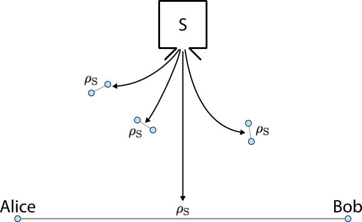
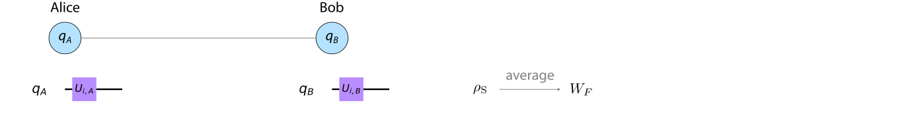
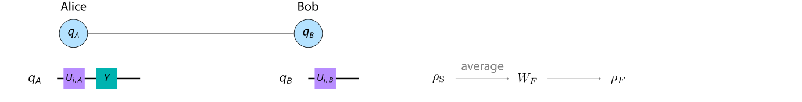
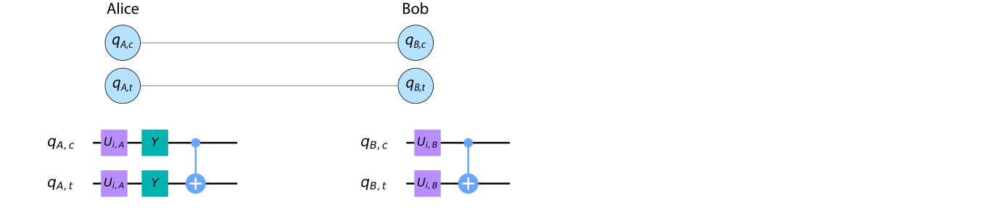
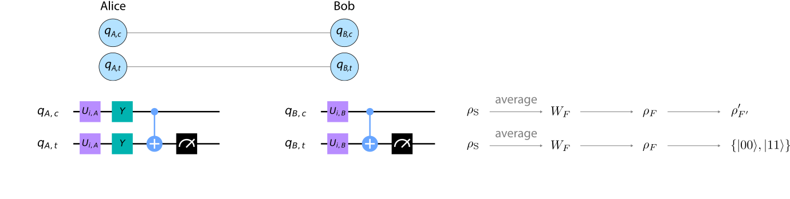

Hands-on 6 :¶
Entanglement Purification: The BBPSSW Protocol¶
import qiskit.tools.jupyter
%qiskit_version_table
Version Information
| Qiskit Software | Version |
|---|---|
qiskit-terra | 0.22.0 |
qiskit-aer | 0.11.0 |
qiskit-ibmq-provider | 0.19.2 |
qiskit | 0.39.0 |
| System information | |
| Python version | 3.8.13 |
| Python compiler | GCC 7.5.0 |
| Python build | default, Mar 28 2022 11:38:47 |
| OS | Linux |
| CPUs | 24 |
| Memory (Gb) | 62.648441314697266 |
| Thu Oct 20 12:40:30 2022 +03 | |
Part I: Introduction to Entanglement Purification and the BBPSSW Protocol¶
1.1 Concept¶
The concept of entanglement purification was introduced by C. H. Bennett et al. [1]. Following the names of the authors, the original protocol is also called the BBPSSW protocol. The basic idea of entanglement purification is to create an (almost) maximally entangled Bell state by distilling entanglement from a larger number of qubit pairs that are not maximally entangled. For this reason, this concept is also referred to as entanglement distillation. Purification usually has to be performed by two remote parties, so only local operations, measurements and classical two-way communication are allowed for entanglement purification protocols.
Many applications of quantum information processing, such as quantum teleportation [2] or entanglement-based quantum cryptography [3], use the maximally entangled Bell states \(\{|\Phi^{\pm}\rangle, |\Psi^{\pm}\rangle\}\),
The feasibility or security of these protocols depends on the “quality” of the available Bell states. However, real sources of entangled qubit pairs or real lossy quantum channels are very likely to produce imperfect Bell states due to preparation errors or imperfect qubit transmission. The aim of entanglement purification is to compensate for this loss in entanglement and restore a maximally entangled Bell state. That is why entanglement purification is also a fundamental component of a quantum repeater [4].
At the beginning we assume a source \(S\) of entangled qubit pairs, which generates two-qubit states \(\rho_\textrm{S}\) with some state fidelity \(F\) towards the maximally-entangled Bell state \(|\Psi^-\rangle\),
As already mentioned, imperfection can be caused by the production process itself or by the transmission of the qubits via lossy quantum channels.
The two parties that each have one of the qubits of the source state \(\rho_\textrm{S}\) are usually called Alice and Bob. The whole scenario is shown in the following figure:
{kind=link}
The basic idea of the BBPSSW protocol is that Alice and Bob take two copies of the state \(\rho_\textrm{S}\) and perform certain quantum operations locally on their qubits to finally generate a single two-qubit state with larger fidelity \(F' > F\). When this is achieved, the process can be iterated to produce even larger fidelities until a maximally entangled Bell state \(| \Psi^- \rangle\) is obtained.
In the following section we will explain the BBPSSW protocol step by step and show how Alice and Bob can increase the entanglement of the state \(\rho_\textrm{S}\).
1.2 Quantum Protocol¶
Step 1: Creation of a Werner State through Random Bilateral Rotation¶
From the two-qubit source state \(\rho_\textrm{S}\) the two parties Alice and Bob must first create a so-called Werner state \(W_F\),
Such a state is diagonal in the Bell basis \(\{ |\Phi^{+}\rangle, |\Phi^{-}\rangle, |\Psi^{+}\rangle, |\Psi^{-}\rangle \}\), has a fidelity of \(F\) towards the Bell state \(|\Psi^-\rangle\), and overlaps equally with the other three Bell states by \((1-F)/3\).
Alice and Bob can achieve this by applying a so-called twirl operation [5] that keeps the \(|\Psi^-\rangle\) component of the state \(\rho_\textrm{S}\), balances the components of the other three Bell states, and removes all off-diagonal elements. A twirl can be implemented by bilateral operations \(B_k (k \in \{x, y, z\})\) that rotate each qubit of the pair by an angle of \(\pi/2\) around the \(k\) axis. A random selection from the following set \(\{ U_i \}\) of 12 combinations of bilateral rotations \(B_k\),
transforms the state \(\rho_\textrm{S}\) into the arithmetic average
which will be exactly the desired Werner state \(W_F\). Here \(I\) denotes the identity operation. An intuitive explanation of the twirl, which comes from molecular physics, can be found in Ref. [2] and is left to the interested reader.
Since Alice and Bob randomly select an operation from the set \(\{ U_i \}\) in a realistic quantum communication scenario, we will also randomly select such an operation in the later implementation in Qiskit. In order to obtain the arithmetic average, we will have to perform several runs of the purification protocol.
We summarize the quantum operations performed locally by Alice and Bob in a graphical illustration for the sake of clarity:
{kind=link}
Here Alice’s and Bob’s qubit are referred to as \(q_A\) and \(q_B\), and \(U_{i, A(B)}\) denotes Alice’s (Bob’s) single-qubit part of the randomly selected operation \(U_i\).
Step 2: Exchange of \(|\Psi^-\rangle\) and \(|\Phi^+\rangle\) Components¶
After Alice and Bob have prepared the state \(W_F\), one of the parties rotates its qubit by an angle of \(\pi\) around the \(y\) axis, which corresponds to using a \(Y\) gate,
The result of such a unilateral rotation is that the components of \(|\Psi^-\rangle\) and \(|\Phi^+\rangle\) are exchanged in the Werner state \(W_F\). Therefore, the operation creates a state \(\rho_F\),
where total phases were omitted in this representation. Without loss of generality, we assume that Alice performs this unilateral rotation, so that the quantum circuit of the protocol up to this point looks like this:
{kind=link}
Step 3: Application of Bilateral CNOT Gate¶
Now that Alice and Bob can prepare the states \(\rho_F\) from the source states \(\rho_\textrm{S}\), they will use two copies of \(\rho_F\) to increase the entanglement of one of these copies. In the first step, the two parties must apply a so-called bilateral CNOT gate to the two qubit pairs \(\rho_F\).
A bilateral CNOT gate means that Alice and Bob each apply a CNOT gate to the two qubits they have locally available. The qubit from the first pair serves as the control qubit in the local CNOT operation, while the corresponding qubit from the second pair serves as the target qubit. Remember: In a CNOT gate, the state of the target qubit is flipped if and only if the control qubit is in the state \(|1\rangle\).
If we now consider all four qubits from the two source qubit pairs \(\rho_\textrm{S}\), the local quantum circuits of Alice and Bob look like this:
{kind=link}
Here we have denoted Alice’s (Bob’s) control qubit \(q_{A(B),c}\) and the corresponding target qubit \(q_{A(B),t}\).
Step 4: Measurement of Target Qubits¶
In the second step, Alice and Bob measure the target qubits \(q_{A,t}\) and \(q_{B,t}\) in the computational basis \(\{|0\rangle, |1\rangle \}\):
{kind=link}
After performing the measurements, Alice and Bob compare their measurement results. If both measurement results are the same, i.e. the target qubits were projected into state \(|00\rangle\) or \(|11\rangle\), the purification was successful and the control qubits are retained. Otherwise they will be discarded.
To see that the purification process is successful exactly in this case, one must calculate the fidelity \(F'\) of the resulting state of the control qubits, which we will call \(\rho'_{F'}\),
Note that the state \(\rho'_{F'}\) does not have the same form as \(\rho_{F}\), which is why we chose this notation. We will not elaborate on the calculation of \(\rho'_{F'}\) in this introduction, as it is not required for the implementation in Qiskit, but only provide the result for \(F'\)[1],
Since the function \(F'(F)\) is required at several points in this tutorial, we define the corresponding function output_fidelity:
import numpy as np
import matplotlib.pyplot as plt
def output_fidelity(F_in):
""" Returns output fidelity of BBPSSW protocol.
Keyword arguments:
F_in -- input fidelity
"""
F_out = (np.square(F_in) + np.square(1-F_in)/9) \
/ (np.square(F_in) + 2*F_in*(1-F_in)/3 + 5*np.square(1-F_in)/9)
return F_out
The output fidelity \(F'\) is larger than the input fidelity for \(1/2 < F < 1\), which you can see very well when plotting the function \(F'(F)\):
F_in = np.arange(0.5, 1.0, 0.01)
plt.plot(F_in, F_in, 'k', label = "$F' = F$")
plt.plot(F_in, output_fidelity(F_in), label = "$F'(F)$")
plt.legend()
plt.xlabel('Input Fidelity $F$')
plt.ylabel("Output Fidelity $F'$");
So, if the input fidelity \(F\) of the source state \(\rho_\textrm{S}\) is larger than 1/2, Alice and Bob can distill entanglement from two copies of that state and increase the fidelity of one of those copies. The two parties can then use two qubit pairs whose fidelity has already been increased to create another qubit pair with even higher fidelity, and so on. By iterating the procedure of the BBPSSW protocol described above, the fidelity of a two-qubit state can thus be brought arbitrarily close to 1, which in turn corresponds to a maximally-entangled Bell state.
Step 5: Restoration of Werner State¶
Note that the state \(\rho'_{F'}\) does not usually have the form of \(\rho_{F}\), i.e. it can contain off-diagonal elements in the Bell basis and the components of \(|\Phi^{-}\rangle\), \(|\Psi^{+}\rangle\) and \(|\Psi^{-}\rangle\) differ in size. But in order to perform a subsequent purification round, we must bring \(\rho'_{F'}\) into the form of \(\rho_{F}\), i.e. we must create something like a state \(\rho_{F'}\),
This can be achieved by performing the above steps backwards again. In the state \(\rho'_{F'}\), the components of \(|\Psi^-\rangle\) and \(|\Phi^+\rangle\) are first swapped again by a unilateral \(Y\) gate (see step 2). Then another twirl operation is performed to create a Werner state \(W_{F'}\),
This state \(W_{F'}\) can now serve as the initial state for a new round of entanglement purification, , since we can easily create the state \(\rho_{F'}\) from it.
In the following implementation in Qiskit we will shorten the purification protocol and omit this fifth step. We only want to do a single purification round here and therefore do not convert the output state \(\rho'_{F'}\) of the control qubits back to the Werner form \(W_{F'}\) after the target qubits have been measured. Instead, we will directly evaluate the fidelity of the control qubits to the Bell state \(| \Phi^+ \rangle\),
because we know the twirl operation leaves the \(|\Psi^- \rangle\) component unchanged.
Herewith we finish the introductory part and turn to the implementation in Qiskit. We will explain in detail how steps 1 - 4 described above can be implemented in Qiskit to determine the state \(\rho'_{F'}\) and calcutate the final \(F'\) fidelity.
Part II: Implementation of Quantum Circuit for BBPSSW Protocol in Qiskit¶
2.1 Basic Code Imports¶
To use Qiskit in this initial part of the tutorial in which we create a quantum circuit for the BBPSSW protocol, we must first import the necessary base code from the Qiskit module:
# Import Qiskit
from qiskit import QuantumCircuit, QuantumRegister, ClassicalRegister
# Import Parameter class
from qiskit.circuit import Parameter
We also need the external library deepcopy and use the constant \(\pi\) from the math library:
from copy import deepcopy
from math import pi
2.2 Definitions¶
As described in Part I, to demonstrate entanglement purification, the fidelity of quantum states towards a maximally-entangled Bell state must be calculated. This calculation is later performed with an integrated Qiskit function that returns the fidelity between two states when specified as numpy arrays.
We therefore define the four Bell states in the basis \(\{|00\rangle, |01\rangle, |10\rangle, |11\rangle\}\) as numpy arrays:
phi_plus = np.array([1, 0, 0, 1])/np.sqrt(2) # | Phi^+ >
phi_minus = np.array([1, 0, 0, -1])/np.sqrt(2) # | Phi^- >
psi_plus = np.array([0, 1, 1, 0])/np.sqrt(2) # | Psi^+ >
psi_minus = np.array([0, 1, -1, 0])/np.sqrt(2) # | Psi^- >
We will also have to check later how well we can initialize a Werner state \(W_F\). For this we define a function Werner_state which returns a numpy array corresponding to a Werner state with a given fidelity \(F\):
def Werner_state(F):
"""Returns Werner state of fidelity F.
Keyword arguments:
F -- fidelity of Werner state, range [0, 1]
"""
if F < 0 or F > 1:
raise Exception('Fidelity must be between 0 and 1.')
state = F*np.outer(psi_minus, psi_minus.conj().T) \
+ (1 - F)/3*(np.outer(phi_plus, phi_plus.conj().T) \
+ np.outer(phi_minus, phi_minus.conj().T) \
+ np.outer(psi_plus, psi_plus.conj().T))
return state
2.3 Quantum Register and Quantum Circuit¶
This section describes how to implement the quantum circuit for entanglement purififcation in Qiskit. For a better understanding, we divide the quantum circuit into its individual parts according to the individual steps in Part I. This means that we first simulate the source of the entangled qubits to create two qubits in the source state \(\rho_\textrm{S}\). We then integrate steps 1 (random bilateral rotation) to 3 (bilateral CNOT gate) individually. Step 4 (measurement of target qubits) will then be dealt with separately later, as the implementation is a little trickier here.
2.3.1 Quantum Register¶
The BBPSSW protocol works with two entangled qubit pairs. In order to implement this protocol, we therefore need a quantum register consisting of four qubits on which our quantum circuit to be defined runs.
In Qiskit a quantum register is an instance of the class QuantumRegister and we can create a register with four qubits in the following way:
qr = QuantumRegister(4)
2.3.2 Circuit for Initialization of Source State¶
First of all we have to create qubit pairs in the state \(\rho_\textrm{S}\). Our goal at the beginning is therefore to simulate the source \(S\), which produces entangled qubits in the state \(\rho_\textrm{S}\), which have an initial fidelity \(F > 1/2\). Remember that such a high fidelity is required for the purification protocol to work.
To achieve this, we will implement a quantum circuit that creates the following state \(|\psi_\textrm{S} \rangle\) between two qubits,
where the two amplitudes are parametrized by an angle \(\theta\) (\(- \pi/2 < \theta < \pi/2\)). From the state vector \(|\psi_\textrm{S} \rangle\) we can then calculate the density matrix \(\rho_\textrm{S} = |\psi_\textrm{S}\rangle\langle \psi_\textrm{S}|\),
The fidelity of \(\rho_\textrm{S}\) towards the Bell state \(| \Psi^- \rangle\), which corresponds to the initial fidelity \(F\), is then given by
We define a function F_to_theta, which returns the angle \(\theta\) for a given fidelity \(F\), since we will need this calculation several times in the tutorial:
def F_to_theta(F):
"""Returns the angle theta corresponding to an input fidelity F.
Keyword arguments:
F -- fidelity between 0 and 1
"""
if F < 0 or F > 1:
raise Exception('Fidelity must be between 0 and 1.')
else:
theta = np.arcsin(2*F - 1)
return theta
In Qiskit quantum circuits are objects of the QuantumCircuit class. We can create a quantum circuit on our quantum register qr by creating an instance of the QuantumCircuit class in the following way:
source_circ = QuantumCircuit(qr)
The quantum circuit source_circ shall finally generate two pairs of qubits in the state \(|\psi_\textrm{S}\rangle\) in the quantum register qr, but is so far an empty quantum circuit, because we have not introduced quantum gates yet. With the method draw quantum circuits can be visualized nicely and we can get a better picture of what our circuit does:
source_circ.draw(output='mpl')
---------------------------------------------------------------------------
MissingOptionalLibraryError Traceback (most recent call last)
Input In [12], in <cell line: 1>()
----> 1 source_circ.draw(output='mpl')
File ~/Prog/miniconda3/envs/qml/lib/python3.8/site-packages/qiskit/circuit/quantumcircuit.py:1957, in QuantumCircuit.draw(self, output, scale, filename, style, interactive, plot_barriers, reverse_bits, justify, vertical_compression, idle_wires, with_layout, fold, ax, initial_state, cregbundle, wire_order)
1954 # pylint: disable=cyclic-import
1955 from qiskit.visualization import circuit_drawer
-> 1957 return circuit_drawer(
1958 self,
1959 scale=scale,
1960 filename=filename,
1961 style=style,
1962 output=output,
1963 interactive=interactive,
1964 plot_barriers=plot_barriers,
1965 reverse_bits=reverse_bits,
1966 justify=justify,
1967 vertical_compression=vertical_compression,
1968 idle_wires=idle_wires,
1969 with_layout=with_layout,
1970 fold=fold,
1971 ax=ax,
1972 initial_state=initial_state,
1973 cregbundle=cregbundle,
1974 wire_order=wire_order,
1975 )
File ~/Prog/miniconda3/envs/qml/lib/python3.8/site-packages/qiskit/visualization/circuit/circuit_visualization.py:263, in circuit_drawer(circuit, scale, filename, style, output, interactive, plot_barriers, reverse_bits, justify, vertical_compression, idle_wires, with_layout, fold, ax, initial_state, cregbundle, wire_order)
248 return _generate_latex_source(
249 circuit,
250 filename=filename,
(...)
260 wire_order=wire_order,
261 )
262 elif output == "mpl":
--> 263 image = _matplotlib_circuit_drawer(
264 circuit,
265 scale=scale,
266 filename=filename,
267 style=style,
268 plot_barriers=plot_barriers,
269 reverse_bits=reverse_bits,
270 justify=justify,
271 idle_wires=idle_wires,
272 with_layout=with_layout,
273 fold=fold,
274 ax=ax,
275 initial_state=initial_state,
276 cregbundle=cregbundle,
277 wire_order=wire_order,
278 )
279 else:
280 raise VisualizationError(
281 "Invalid output type %s selected. The only valid choices "
282 "are text, latex, latex_source, and mpl" % output
283 )
File ~/Prog/miniconda3/envs/qml/lib/python3.8/site-packages/qiskit/visualization/circuit/circuit_visualization.py:643, in _matplotlib_circuit_drawer(circuit, scale, filename, style, plot_barriers, reverse_bits, justify, idle_wires, with_layout, fold, ax, initial_state, cregbundle, wire_order)
640 if fold is None:
641 fold = 25
--> 643 qcd = _matplotlib.MatplotlibDrawer(
644 qubits,
645 clbits,
646 nodes,
647 scale=scale,
648 style=style,
649 reverse_bits=reverse_bits,
650 plot_barriers=plot_barriers,
651 layout=None,
652 fold=fold,
653 ax=ax,
654 initial_state=initial_state,
655 cregbundle=cregbundle if cregbundle is not None else True,
656 global_phase=None,
657 calibrations=None,
658 qregs=None,
659 cregs=None,
660 with_layout=with_layout,
661 circuit=circuit,
662 )
663 return qcd.draw(filename)
File ~/Prog/miniconda3/envs/qml/lib/python3.8/site-packages/qiskit/utils/classtools.py:117, in _WrappedMethod.__get__.<locals>.out(*args, **kwargs)
115 for callback in self._before:
116 callback.__get__(obj, objtype)(*args, **kwargs)
--> 117 retval = method(*args, **kwargs)
118 for callback in self._after:
119 callback.__get__(obj, objtype)(*args, **kwargs)
File ~/Prog/miniconda3/envs/qml/lib/python3.8/site-packages/qiskit/utils/classtools.py:116, in _WrappedMethod.__get__.<locals>.out(*args, **kwargs)
113 @functools.wraps(method)
114 def out(*args, **kwargs):
115 for callback in self._before:
--> 116 callback.__get__(obj, objtype)(*args, **kwargs)
117 retval = method(*args, **kwargs)
118 for callback in self._after:
File ~/Prog/miniconda3/envs/qml/lib/python3.8/site-packages/qiskit/utils/lazy_tester.py:39, in _RequireNow.__call__(self, *_args, **_kwargs)
38 def __call__(self, *_args, **_kwargs):
---> 39 self._tester.require_now(self._feature)
File ~/Prog/miniconda3/envs/qml/lib/python3.8/site-packages/qiskit/utils/lazy_tester.py:223, in LazyDependencyManager.require_now(self, feature)
221 if self:
222 return
--> 223 raise MissingOptionalLibraryError(
224 libname=self._name, name=feature, pip_install=self._install, msg=self._msg
225 )
MissingOptionalLibraryError: "The 'pylatexenc' library is required to use 'MatplotlibDrawer'. You can install it with 'pip install pylatexenc'."
We can see how the quantum register qr is constructed from the four qubits \(q0_0\) to \(q0_3\). (q0 is actually the name of the register itself.) Note that the qubit label starts with index 0 according to the indexing in Python.
We will create a source state \(|\psi_\textrm{S}\rangle\) between qubits \(q0_0\) (qubit 0) and \(q0_1\) (qubit 1) and between qubits \(q0_2\) (qubit 2) and \(q0_3\) (qubit 3). Qubit 0 and qubit 1 should serve as control qubits, while the target qubits are qubit 2 and qubit 3. If we compare this with the representation in the introductory Part I, we find the following correspondences:
Qubit |
Notation |
Notation in Qiskit |
|---|---|---|
Control qubit Alice |
\(q_{A,c}\) |
\(q0_0\) |
Control qubit Bob |
\(q_{B,c}\) |
\(q0_1\) |
Target qubit Alice |
\(q_{A,t}\) |
\(q0_2\) |
Target qubit Bob |
\(q_{B,t}\) |
\(q0_3\) |
The following shows how to set the control pair to \(|\psi_\textrm{S}\rangle\). The implementation for the target pair is left as an exercise.
By default, all qubits are initialized to the state \(|0\rangle\), i.e. the state \(|\psi_\textrm{control}\rangle\) of the control pair is
where the index is to denote the corresponding qubit. As first step we flip qubit 1 using a Pauli-\(X\) gate,
In Qiskit a Pauli-\(X\) gate can be implemented in a quantum circuit with the method x of the classQuantumCircuit:
source_circ.x(qr[1]);
Every qubit \(i\) in the register can be called with qr[i]. So x(qr[1]) implements an \(X\) gate on qubit 1. If we draw the quantum circuit again, we see that a single-qubit gate \(X\) is applied to qubit \(q0_1\):
source_circ.draw(output='mpl')
After applying the \(X\) gate, the control pair is in the state
We then apply a specific single-qubit gate from the general single-qubit rotations \(u(\theta, \phi, \lambda)\) to qubit 0,
We set the parameters \(\phi = \pi\) and \(\lambda = 0\),
to bring the control qubits into the following state
Such a one-qubit rotation is realized with the method u, to which we pass the rotation parameters as input arguments:
# Create a parameter theta
theta = Parameter('theta')
# Implement a parametrized single-qubit gate u on qubit 0
source_circ.u(theta, pi, 0, qr[0]);
Later in this tutorial, we will perform entanglement purification for different input fidelities \(F\), i.e. for different values of \(\theta\). Therefore, we have defined a parameter called theta, which is an instance of the class Parameter and to which a value can be assigned when the quantum circuit is executed. The input parameters of the method u are the angles \(\theta\), \(\phi\) and \(\lambda\), and the qubit to which the gate is applied. If we draw the circuit again, we now see another single-qubit operation \(U\) applied to qubit \(q0_0\):
source_circ.draw(output='mpl')
Now we have to use a CNOT gate between qubit 0 and qubit 1, where qubit 1 is flipped if qubit 0 is in the state \(|1\rangle\) to create the desired source state \(|\psi_\textrm{S}\rangle\),
In Qiskit a CNOT gate can be added to a quantum circuit using the method cx, which uses the control and the target qubit as input arguments:
# Implement a CNOT between qubit 0 as control qubit and qubit 1 as target qubit
source_circ.cx(qr[0], qr[1]);
(To avoid any misunderstandings here due to the term control and target qubit: The CNOT used here serves to generate the source state \(|\psi_\textrm{S}\rangle\) and has nothing to do with the bilateral CNOT of the BBPSSW protocol.)
The complete quantum circuit to simulate a source of entangled qubit pairs and generate the state \(|\psi_\textrm{S}\rangle\) between qubits \(q0_0\) and \(q0_1\) looks like this:
source_circ.draw(output='mpl')
Since we need two copies of the state \(\rho_\textrm{S}\) to perform entanglement purification, we also need to set qubits 2 and 3 to the source state \(|\psi_\textrm{S}\rangle\),
We call this state \(|\psi_\textrm{target}\rangle\) because the two qubits are the target pair of the BBPSSW protocol.
Send it after class 1¶
Add the necessary quantum gates to the circuit source_circ so that the state \(|\psi_\textrm{S}\rangle\) is generated between qubits 2 and 3. The implementation can be done in analogy to the above steps in which this state was generated between the control qubits.
###
### Enter your code below
###
# Implement a Pauli-X gate on qubit 3
source_circ.x(qr[3])
# Implement a single-qubit gate u on qubit 2
source_circ.u(theta, pi , 0, qr[2])
# Implement a CNOT between qubit 2 as control qubit and qubit 3 as target qubit
source_circ.cx(qr[2], qr[3]);
You can check your solution for Exercise 1 by drawing the circuit source_circ and comparing the two parts that create the state \(|\psi_\textrm{S}\rangle\) between the control and the target qubits:
source_circ.draw(output='mpl')
A single-qubit rotation \(U(\textrm{theta}, \pi, 0)\) should now also be applied to qubit \(q0_2\), an \(X\) gate should also be applied to qubit \(q0_3\) and a CNOT should be applied between the two qubits.
To clearly define which qubits are the control pair and which qubits are the target pair of the BBPSSW protocol, we define the two arrays control_qubits and target_qubits, which contain the corresponding qubits:
control_qubits = [qr[0], qr[1]]
target_qubits = [qr[2], qr[3]]
2.3.3 Implementation of Twirl Operation by Random Bilateral Rotation¶
To implement the twirl operation, we create another instance of a quantum circuit called twirl_circ that performs the random bilateral rotation explained in step 1 of Sec. 1.2:
twirl_circ = QuantumCircuit(qr)
Remember: To implement the twirl, Alice and Bob randomly select an element from the set of 12 bilateral operations \(\{U_i\}\) and apply the corresponding rotations locally to their qubit.
To implement an operation randomly selected from \(\{U_i\}\), we define an auxiliary function bilateral_rotation. This function has the following input parameters:
circuit: The instance of a quantum circuit to which the rotations are to be added.qubits: A list of qubits, each of which is rotated.rot_idx: An integer number that numbers the elements of the set \(\{U_i\}\). For example,rot_idx = 0corresponds to the identity operation,rot_idx = 1corresponds \(B_x B_x\), and so on.
def bilateral_rotation(circuit, qubits, rot_idx):
"""Adds a bilateral rotation to a quantum circuit.
Keyword arguments:
circuit -- quantum circuit to which the rotations are added
qubits -- alist of qubits, each of which is rotated
rot_idx -- integer that numbers the rotations from the set of all rotations, ranges from 0 to 11
"""
for qubit in qubits:
if rot_idx == 0:
pass
elif rot_idx == 1:
circuit.rx(pi/2, qubit)
circuit.rx(pi/2, qubit)
elif rot_idx == 2:
circuit.ry(pi/2, qubit)
circuit.ry(pi/2, qubit)
elif rot_idx == 3:
circuit.rz(pi/2, qubit)
circuit.rz(pi/2, qubit)
elif rot_idx == 4:
circuit.rx(pi/2, qubit)
circuit.ry(pi/2, qubit)
elif rot_idx == 5:
circuit.ry(pi/2, qubit)
circuit.rz(pi/2, qubit)
elif rot_idx == 6:
circuit.rz(pi/2, qubit)
circuit.rx(pi/2, qubit)
elif rot_idx == 7:
circuit.ry(pi/2, qubit)
circuit.rx(pi/2, qubit)
elif rot_idx == 8:
circuit.rx(pi/2, qubit)
circuit.ry(pi/2, qubit)
circuit.rx(pi/2, qubit)
circuit.ry(pi/2, qubit)
elif rot_idx == 9:
circuit.ry(pi/2, qubit)
circuit.rz(pi/2, qubit)
circuit.ry(pi/2, qubit)
circuit.rz(pi/2, qubit)
elif rot_idx == 10:
circuit.rz(pi/2, qubit)
circuit.rx(pi/2, qubit)
circuit.rz(pi/2, qubit)
circuit.rx(pi/2, qubit)
elif rot_idx == 11:
circuit.ry(pi/2, qubit)
circuit.rx(pi/2, qubit)
circuit.ry(pi/2, qubit)
circuit.rx(pi/2, qubit)
else:
raise Exception('Input argument rot_idx has to be an integer between 0 and 11.')
The single-qubit rotations around the \(x\), \(y\) and \(z\) axes required for the bilateral rotation can be implemented in Qiskit with the following methods:
rx: Rotation about the \(x\) axis.ry: Rotation about the \(y\) axis.rz: Rotation about the \(z\) axis.
The angle of rotation and the respective qubit must be specified as input arguments.
Remember that the bilateral operations \(B_k\) from which the elements of \(\{ U_i\}\) are constructed are rotations around the \(k\) axis by an angle of \(\pi/2\) and that the rotations are applied to both qubits of the entangled pair. With this knowledge it is understandable how the operations in the function bilateral_rotation are built up from single-qubit rotations rx, ry and rz by angles of \(\pi/2\).
Now we add a random bilateral rotation to the circuit twirl_circ with the function bilateral_rotation, once for the control qubit pair and once for the target qubit pair:
# Create a random integer between 0 and 11
random_idx = np.random.randint(12)
# Add a random bilateral rotation to the circuit, applied to qubits 0 and 1 (control qubits)
bilateral_rotation(twirl_circ, control_qubits, random_idx)
# Add a random bilateral rotation to the circuit, applied to qubits 2 and 3 (target qubits)
bilateral_rotation(twirl_circ, target_qubits, random_idx)
The circuit twirl_circ thus has the following structure:
twirl_circ.draw(output='mpl')
If this operation is applied to a large number of qubit pairs in the state \(|\psi_\textrm{S}\rangle\), the average output state is a Werner state \(W_F\) (see step 1, Sec. 1.2),
This means that on average the control and target pairs are brought into a Werner state after the circuit twirl_circ has been applied.
2.3.4 Exchange of \(|\Psi^-\rangle\) and \(|\Phi^+\rangle\) Components¶
The next step is that Alice applies a unilateral \(\pi\) rotation around the \(y\) axis to her qubits, so that the components of \(|\Psi^-\rangle\) and \(|\Phi^+\rangle\) are exchanged in the control and the target pair, which leads to the transformation of a Werner state \(W_F\) into the state \(\rho_F\) (see step 2, Sec 1.2),
This means that the rotations are applied to one qubit of the control pair and one qubit of the target pair. Such a rotation corresponds to a Pauli-\(Y\) gate, i.e. a bit flip and a phase flip gate,
With Qiskit, such a rotation can be applied to a qubit with the method y on a circuit. We create a new quantum circuit called purification_circ and add the \(Y\) gates to the corresponding qubits:
purification_circ = QuantumCircuit(qr)
# Implement a Pauli-Y gate on Alice's control qubit
purification_circ.y(control_qubits[0])
# Implement a Pauli-Y gate on Alice's target qubit
purification_circ.y(target_qubits[0]);
We call this quantum circuit purification_circ, because this operation is actually the first part of the BBPSSW protocol, which starts from qubit pairs in the Werner state \(W_F\). (In the next section we therefore add the bilateral CNOT gate to this circuit.)
In this quantum circuit, the single-qubit operations \(Y\) are applied to the qubits \(q0_0\) and \(q0_2\):
purification_circ.draw(output='mpl')
If the quantum circuit purification_circ is applied to two qubit pairs in the Werner state \(W_F\), this results in two qubit pairs in the state \(\rho_F\).
2.3.5 Application of Bilateral CNOT Gate¶
The next step of the BBPSSW protocol is that Alice and Bob apply a bilateral CNOT gate. This means that Alice and Bob each perform a CNOT gate between the two qubits they hold locally (step 3, Sec 1.2).
Send it after class 2¶
We have already defined the arrays control_qubits and target_qubits above, which contain the qubits of the control and the target pair. The first element of these arrays is Alice’s qubit and the second is Bob’s.
Add the bilateral CNOT operation to the quantum circuit purification_circ by applying CNOT gates between the corresponding elements of the control_qubits and target_qubits arrays. I.e. a CNOT between Alice’s qubits and a CNOT between Bob’s qubits. Remember that in Qiskit a CNOT gate is implemented using the method cx.
###
### Enter your code below
###
for i in range(2):
purification_circ.cx(control_qubits[i], target_qubits[i])
If you now draw the circuit purification_circ, you should see two CNOT gates in addition to the two \(Y\) gates, one between qubits \(q0_0\) and \(q0_2\), and one between qubits \(q0_1\) and \(q0_3\):
purification_circ.draw(output='mpl')
In the subsequent step of the BBPSSW protocol (step 4, Sec 1.2) the target qubits (qubits 2 and 3) should be measured in the computational basis. The measurement results must then be compared a successful round of entanglement purification.
We will implement this step during the process of quantum state tomography, but this is described and explained below (Sec 2.4). Briefly summarized: It will work in such a way that we will only perform state tomography of the control qubits if the results of the measurements of the target qubits are the same.
We would like to point out once again that after the bilateral CNOT gate and the measurement of the target qubits, the control qubit pair must be returned to Werner form in order to perform a subsequent purification round (step 5, Sec. 1.2). As already explained, this step is not necessary to prove an increase in fidelity and can therefore be omitted for our purposes.
2.3.6 Concatenation of Quantum Circuits¶
We have divided the entire quantum circuit for the BBPSSW protocol into three parts for the initialization of the entangled qubit pairs (source_circ), the twirl operation (twirl_circ) and the purification step itself (purification_circ).
(Note that this was only done for educational reasons. We could have built all gates into a single quantum circuit from the beginning.)
In Qiskit it is possible to concatenate quantum circuits simply by adding. Therefore, the entire quantum circuit for the purification experiment can be constructed from the three circuits source_circ, twirl_circ, and purification_circ as follows:
experiment_circ = source_circ + twirl_circ + purification_circ
Overall, the complete circuit for the BBPSSW protocol has the following structure:
experiment_circ.draw(output='mpl')
We can now compare this with the quantum circuits from the introductory part (Part I). The gates up to the first CNOTs are not part of Alice’s and Bob’s circuits presented in the introduction. This is because these gates are needed to first simulate the source that creates the source states \(\rho_\textrm{S}\). Then we recognize the single-qubit parts \(U_{i,A(B)}\) of the bilateral rotation \(U_i\), which of course depend here on the random index random_idx chosen above. (Only in the case of random_idx = 0 do you actually see no parts of the bilateral rotation, as this corresponds to the identity operation.) Then the unilateral rotations Alice performs are implemented on the qubits \(q0_0\) and \(q0_2\), followed by the bilateral CNOT.
2.4 (Conditional) Quantum State Tomography¶
Finally, we want to find out the state \(\rho'_{F'}\) of the control qubit pair, i.e. the state of the qubits 0 and 1, so that we can calculate its fidelity \(F'\) (see step 4, Sec 1.2),
To reconstruct the density matrix \(\rho'_{F'}\), we can use methods of quantum tomography. The library for tomography is part of the Qiskit element Ignis, which is a framework for handling noise in quantum circuits. Qiskit Ignis offers methods for the implementation of state and process tomography. For the purification protocol we only have to implement quantum state tomography and will therefore concentrate on it in this tutorial.
The functions and classes necessary for performing quantum state tomography can be imported from the tomography library:
from qiskit.ignis.verification.tomography import state_tomography_circuits, StateTomographyFitter
In order to perform quantum state tomography, we must first generate tomography circuits with the function state_tomography_circuits. From the measurement results of these tomography circuits we can then reconstruct the state \(\rho'_{F'}\) with methods of the fitter class StateTomographyFitter.
The tomography circuits themselves consist of the original circuit to which specific gates and qubit measurements are attached. The function state_tomography_circuits therefore has the following input arguments:
circuit: Quantum circuit on which the tomography is performed.measured_qubits: List of qubits whose quantum state is being reconstructed.
In our case we want to reconstruct the state of the control qubits after executing the circuit experiment_circ. The desired state tomography circuits can therefore be generated as follows:
tomography_circs = state_tomography_circuits(experiment_circ, control_qubits)
tomography_circs is a list of quantum circuits and from the measurement results of all these circuits the state \(\rho'_{F'}\) can be reconstructed.
As an example, the first tomography circuit looks like this:
tomography_circs[0].draw(output='mpl')
We can recognize the circuit experiment_circ up to the bilateral CNOT gate and see that two additional Hadamard gates are applied to the qubits \(q0_0\) and \(q0_1\). The control qubits are then measured in the computational basis and the measurement results are stored in a classical register \(c0\). This classical register was also added by the function state_tomography_circuits and its size corresponds to the number of qubits whose quantum state is to be reconstructed.
From the execution results of tomography_circs we would reconstruct the density matrix of the control qubits if no measurement was performed on the target qubits. Thus, one can and should rightly remark that Step 4 (Measurement of Target Qubits) of the BBPSSW protocol is missing in the quantum circuit experiment_circ. Remember that purification only worked if the target qubits were measured and the measurements gave the same results. This is a crucial step, which must, of course, also be taken into account here! For this purpose, we will perform conditional quantum state tomography and adapt a strategy presented in [6] to our needs.
By conditional state tomography, we mean here that the tomography is only performed if the target qubits were previously measured either both in the state \(|0\rangle\) or both in the state \(|1\rangle\). This corresponds exactly to the discarding of all failed purifications. Therefore we have to add the measurements of the target qubits before building the tomography circuits with the function state_tomography_circuits.
Now an instance of the class StateTomographyFitter, from which we can finally reconstruct a density matrix, is constructed from a set of tomography circuits and the corresponding execution results. The constructor of the class StateTomographyFitter needs as input argument a set of quantum circuits in the form of the tomography circuits tomography_circs, which contain exactly one classical register \(c0\) consisting of two classical bits. However, if we first add the additional measurements of the target qubits, we introduce another classical register to store the measurement results. And in this case we can no longer construct the fitter directly, since the tomography circuits would now contain two classical registers.
What we will do instead is to make a copy of the circuit experiment_circ, add the measurements of the target qubits, and create a set of corresponding tomography circuits. These circuits are then actually executed. The results of this execution can then be edited to keep only those cases where the target qubits were measured with the same results. The edited results can then be fed into the fitter along with our original circuits tomography_circs to reconstruct the state \(\rho'_{F'}\) of the control qubits.
The following shows how to create these ancilla circuits and Part III explains in detail how to edit the execution results correctly.
The conditional state tomography is thus implemented as follows. First we make a copy of our original circuit experiment_circ:
ancilla_circ = deepcopy(experiment_circ)
We call this circuit ancilla_circ because it helps to generate the information needed to reconstruct \(\rho'_{F'}\).
We then add a classical register to ancilla_circ which is an instance of the class ClassicalRegister to store the results of the measurement of the target qubits. We need a two-bit register here:
# Create a classical register cr consisting of two bits
cr = ClassicalRegister(2)
# Add the classical register to the circuit
ancilla_circ.add_register(cr)
Next, we must actually add the measurements of the target qubits. A measurement process can be added to a quantum circuit using the method measure. The method requires two input arguments, namely the qubit to be measured and the bit in a classical register for storing the measurement result.
The desired measurement of the target qubits can therefore be implemented as follows:
# Implement a measurement of Alice's target qubit and store the result in bit 0
ancilla_circ.measure(target_qubits[0], cr[0])
# Implement a measurement of Bob's target qubit and store the result in bit 1
ancilla_circ.measure(target_qubits[1], cr[1]);
Let’s have a look at the circuit ancilla_circ:
ancilla_circ.draw(output='mpl')
From the circuit diagram we can see that a classical register \(c1\) has been added to the circuit ancilla_circ compared to the original circuit experiment_circ and that the qubits \(q0_2\) and \(q0_3\) are measured after the bilateral CNOT.
For the circuit ancilla_circ we also create tomography circuits ancilla_tomography_circs using the function state_tomography_circuits to reconstruct the state of the control qubits:
ancilla_tomography_circs = state_tomography_circuits(ancilla_circ, control_qubits)
It is now these ancilla circuits ancilla_tomography_circs that are actually executed. As an example we draw one of the ancilla circuits:
ancilla_tomography_circs[0].draw(output='mpl')
We have already seen that the target qubits \(q0_2\) and \(q0_3\) are measured in the classical register \(c1\). In addition, the results for the tomography of the control qubits \(q0_0\) and \(q0_1\) are stored in the automatically added classical register \(c2\).
At this point, we already import a usefull function from the Python toolkit Mitiq [7], which removes all barriers from a quantum circuit:
#from mitiq.mitiq_qiskit.conversions import _remove_barriers
from qiskit.transpiler.passes import RemoveBarriers
The reason for removing the barriers is that circuits as shown above cannot be executed on real IBMQ hardware because no gates are allowed after measurements. Although in the example circuit ancilla_tomography_circs[0] above the two Hadamard gates on qubits 0 and 1 “follow” measurements on qubits 2 and 3, this circuit is still considered to be not executable on real IBMQ hardware. Therefore we will simply remove the barrier and by this make it executable:
#_remove_barriers(ancilla_tomography_circs[0]).draw(output='mpl')
ancilla_tomography_circs[0] = RemoveBarriers()(ancilla_tomography_circs[0])
ancilla_tomography_circs[0].draw(output='mpl')
At the end of this Part II, we are at the point where we have generated all the quantum circuits necessary to implement the full BBPSSW protocol. In the following part we can therefore continue with the simulation of the purification experiment and have our implementation run with the simulator integrated in Qiskit.
Part III: Simulation of the BBPSSW Protocol using Qiskit¶
In this part we will simulate the quantum circuit for the BBPSSW protocol. For this we use a simulator that is integrated in Qiskit. In the first section we simulate the BBPSSW protocol for a single quantum system. To finally demonstrate a successful purification, we calculate an average of many quantum systems to generate approximately the state \(\rho'_{F'}\) and extract the purified fidelity \(F'\).
To execute a quantum circuit in Qiskit, we must first select a backend on which on which to run the quantum program. Such a backend can either be a simulator or a real IBM Q device.
The QASM simulator is part of the Qiskit element Aer and to use it we need to import the following libraries:
from qiskit import Aer, execute
To select the simulator as backend for the execution of the quantum circuit, we use the method get_backend:
backend_QASM = Aer.get_backend('qasm_simulator')
3.1 Single Quantum System¶
In the following we will first execute the circuits tomography_circs and reconstruct the density matrix for the control qubits. This is done mainly for educational reasons to introduce the functionality of the class StateTomographyFitter. Then we run the ancilla circuits ancilla_tomography_circs and explain how to edit the execution results to be able to use the fitter.
We can execute a quantum circuit with the function execute, which requires the following input arguments:
circuits: A single quantum circuit or a list of quantum circuits to be executed.backend: The backend to run the circuits.shots: Number of repeated executions of each circuit.parameter_binds: List of parameter-value pairs (given as python dictionary) that bind the parameters to specific values.
To simulate the circuits tomography_circs with an input fidelity of e.g. \(F=0.75\), we can execute the following code:
job = execute(tomography_circs, backend_QASM, shots=1024, parameter_binds=[{theta: F_to_theta(0.75)}])
Here the parameter \(\theta\) is bound to the value corresponding to a fidelity of \(F = 0.75\) via the function F_to_theta defined at the beginning of the tutorial.
What is returned after the simulation is an object of the class AerJob, which we call job and from which we can extract the results of the simulation with the method result:
job_results = job.result()
Now that we have performed the tomography circuits, we can reconstruct the density matrix of the control qubits using methods from quantum state tomography. All this is implemented in Qiskit by the class StateTomographyFitter.
Using the object job_results we first create a fitter object of the class StateTomographyFitter:
fitter = StateTomographyFitter(job_results, tomography_circs)
The fitter provides a method fit that returns the reconstructed density matrix that we call rho_fit:
rho_fit = fitter.fit()
The two-qubit state rho_fit is returned as a 4x4 numpay array. Although for all further steps we only need this array, it might be helpful to explain a way to visualize quantum states in Qiskit simply for better illustration. We would like to mention the function plot_state_city which draws two bar blots of the real and imaginary parts of rho_fit:
from qiskit.tools.visualization import plot_state_city
plot_state_city(rho_fit)
Now that we have seen how to use Qiskit’s tools for quantum state tomography, we can proceed and perform conditional quantum state tomography.
We start with the same steps as above, i.e. we first execute the ancillas ancilla_tomography_circs and retrieve the job results:
job = execute(ancilla_tomography_circs, backend_QASM, shots=1024, parameter_binds=[{theta: F_to_theta(0.75)}])
ancilla_results = job.result()
So far the results object ancilla_results also contains results of unsuccessful executions (i.e. where the target qubits were measured with different outcomes) and it has a structure from which we cannot directly reconstruct the density matrix of the control qubits. So what we need to do is:
Discard the results of unsuccessful executions.
Remove the parts in the object
ancilla_resultsthat prevent us from using the fitter.
To better see excatly what needs to be done, we compare the property results of the job_results and the ancilla_results:
job_results.results[0]
ancilla_results.results[0]
The property results is a list containing information about the results of each circuit executed.
First, the property counts must be adjusted so that all events where the target qubits had different outcomes are removed and the counts for the outcomes of the control qubits are corrected accordingly. In the following, we will explain in more detail what we mean by this.
We can get the counts as a dictionary using the method get_counts. For the first circuit in ancilla_tomography_circs the counts dictionary can be created like this:
ancilla_results.get_counts(0)
In the bit strings, the left-most bit corresponds to the measurement outcome of qubit \(q0_3\) and the right-most bit to the outcome of qubit \(q0_0\). Therefore, the first two bits are the outcomes of the target qubits and so we must remove all key-value pairs whose first two bits in the key are either '01' or '10'. In addition, we need to correct the counts of the control qubit outcomes. In the results job_result, the counts are:
job_results.get_counts(0)
Of course, here we can only have the events '00', '01', '10', and '11' because we only measure two qubits. From the counts of the ancilla_results, we must therefore add the counts of the successful events which have the same outcome of the control-qubit measurement. For example, if there were events such as '00 11' and '11 11', then the counts of these events must be added for a control qubit outcome of '11'.
To store the edited counts, we first create an empty dictionary conditional_counts:
conditional_counts = {}
Then we loop through all entries in the dictionary ancilla_results.get_counts(0) and process the counts exactly as we described above:
for result, count in ancilla_results.get_counts(0).items():
# Get measurement out comes
target_measurement = result.split(' ')[0]
control_measurement = result.split(' ')[1]
# Keep counts if target qubits were measured '00' or '11'
if target_measurement in ('00', '11'):
# Add counts to existing events or create new key-value pair
if control_measurement in conditional_counts:
conditional_counts[control_measurement] = conditional_counts[control_measurement] + count
else:
conditional_counts[control_measurement] = count
The edited counts dictionary, which only contains successful purification events, will then look like this:
conditional_counts
We can now set the conditional_counts as the field counts of some other results object, e.g. following the above steps as counts of ancilla_results.results[0].data:
ancilla_results.results[0].data.counts = conditional_counts
If we compare the results job_results.results.results[0] and ancilla_results.results[0] further, we have to do the following additional steps:
Remove the bits from the classical register \(c1\) in
clbit_labelsand increg_sizes.Set the value of
memory_slotsto 2.
In the following we will implement all steps explained above for all results in ancilla_results. We store the processed results in an object called conditional_results, which we create from the result object ancilla_results:
conditional_results = deepcopy(ancilla_results)
The implementation of the code is given below:
for ii,_ in enumerate(ancilla_results.results):
counts = ancilla_results.get_counts(ii)
conditional_counts = {}
# Keep counts of successful purifications
for result, count in counts.items():
target_measurement = result.split(' ')[0]
control_measurement = result.split(' ')[1]
if target_measurement in ('00', '11'):
if control_measurement in conditional_counts:
conditional_counts[control_measurement] = conditional_counts[control_measurement] + count
else:
conditional_counts[control_measurement] = count
# Create new counts property from conditional_counts
conditional_results.results[ii].data.counts = conditional_counts
# Remove classical bits in ancilla register
old_labels = conditional_results.results[ii].header.clbit_labels
conditional_results.results[ii].header.clbit_labels = old_labels[0:2]
# Remove ancilla register
old_sizes = conditional_results.results[ii].header.creg_sizes
conditional_results.results[ii].header.creg_sizes = [old_sizes[0]]
# Set memory_slots to 2
conditional_results.results[ii].header.memory_slots = 2
If we look at the new results conditional_results, we see that they now have the same form as the job_results:
conditional_results.results[0]
(To the best knowledge of the author, the property shots does not need to be adjusted and the fitter will take care of a possibly smaller number of remaining events.)
At this point it is certainly helpful to summarize again which steps we have performed above and why. Remember: All the above steps were necessary because we cannot directly use the results of the ancilla tomography circuit execution to reconstruct the density matrix of the control qubits using the Qiskit functions for quantum state tomography. Therefore we took a small detour and carried out the following steps to perform conditional quantum state tomography:
Executed the ancilla tomography circuits
ancilla_tomography_circs.Edited the results of this execution so that all failed purifications were discarded.
Further edited the results to obtain the object
conditional_results, which has the same structure as a result coming from the execution of the tomography circuitstomography_circs.
Now we are ready to use the Qiskit features to reconstruct the density matrix of the control qubits, only considering the cases of successful purification.
Again with the class StateTomographyFitter we reconstruct the density matrix with the method fit, but this time we provide the result object conditional_results instead of job_results:
conditional_rho_fit = StateTomographyFitter(conditional_results, tomography_circs).fit()
The state conditional_rho_fit is now the reconstructed state of the control qubits, if only cases of successful purification are considered:
plot_state_city(conditional_rho_fit)
The state conditional_rho_fit depends on the bilateral rotation contained in the twirl circuit twirl_circ, since Alice and Bob randomly choose which bilateral rotation is performed at the beginning.
Remember that the reason for this was that the BBPSSW protocol works on Werner states \(W_F\) and these are arithmetic averages of bilaterally-rotated density matrices,
In practice, Alice and Bob choose a random element from the set \(\{U_i\}\) of bilateral operations and apply it to a source state \(\rho_\textrm{S}\). If Alice and Bob apply this random operation to a number \(N\) of source states \(\rho_\textrm{S}\), then the average state for large \(N\) is approximately a Werner state,
where \(\rho_n\) denotes the state after the bilateral rotation.
The interesting figure is therefore not a single control-qubit state conditional_rho_fit after execution of the BBPSSW protocol, but rather an average of these states over many execution runs \(N\) with randomly selected operations \(U_i\) in the twirl circuit twirl_circ. Therefore, in the following section we examine a large number of sources \(\rho_\textrm{S}\) and calculate the average result of the BBPSSW protocol to demonstrate its working principle.
3.2 Ensemble Average¶
3.2.1 Definition of Auxiliary Functions¶
To make the following section easier to read, we define some helpful functions to implement the tomography for the case of an ensemble. Essentially, these functions summarize the steps from the previous section in a compact way.
First we define a function experiment_circuit, which has the index of the bilateral rotation as input parameter and returns a corresponding experiment circuit for the whole purification procedure:
def experiment_circuit(index):
""" Returns experiment circuit corresponding to an index.
Keyword arguments:
index -- integer between 0 and 11
Returns:
experiment_circ -- quantum circuit
"""
if index < 0 or index > 11:
raise Exception("Index for bilateral rotation exceeds range of possible values.")
# Create twirl circuit from the bilateral rotations
twirl_circ = QuantumCircuit(qr)
bilateral_rotation(twirl_circ, control_qubits, index)
bilateral_rotation(twirl_circ, target_qubits, index)
experiment_circ = source_circ + twirl_circ + purification_circ
return experiment_circ
Next we define a function ancilla_circuit which takes a quantum circuit and returns a corresponding ancilla circuit which is a copy of the original circuit and in which certain qubits are measured:
def ancilla_circuit(quantum_circuit, qubits):
""" Return an ancilla circuit that includes additional measurements.
Keyword arguments:
quantum_circuit -- single quantum circuit
qubits -- list of qubits to be measured
Returns:
ancilla_circ -- ancilla quantum circuit including measurement of qubits
"""
# Copy original circuit
ancilla_circ = deepcopy(quantum_circuit)
# Add classical register
cr = ClassicalRegister(len(qubits))
ancilla_circ.add_register(cr)
# Measure qubits
for i, qubit in enumerate(qubits):
ancilla_circ.measure(qubit, cr[i])
return ancilla_circ
To perform conditional quantum state tomography, we have seen that the ancilla tomography circuits must be executed, and we need the tomography circuits for the original experiment circuit along with the execution results to fit the state of the control qubits. For this purpose we define a function conditional_tomography_circuits, which returns both sets of tomography circuits:
def conditional_tomography_circuits(quantum_circuit):
""" Returns all tomography circuits for conditional quantum state tomography.
Keyword arguments:
quantum_circuit -- single quantum circuit
Returns:
tomography_circs -- tomography circuits for quantum circuit
ancilla_tomography_circs -- ancilla tomography circuits with additional measurements on target qubits
"""
# Create ancilla circuit
ancilla_circ = ancilla_circuit(quantum_circuit, target_qubits)
# Create tomography circuits
tomography_circs = state_tomography_circuits(quantum_circuit, control_qubits)
ancilla_tomography_circs = state_tomography_circuits(ancilla_circ, control_qubits)
return tomography_circs, ancilla_tomography_circs
We have also seen how to edit the results of the execution of ancilla tomography circuits so that all shots that do not meet the condition for successful purification are discarded. We summarize those steps in the function purification_shots:
def purification_shots(job_results):
""" Keep counts for successful purifications and return corresponding result.
Keyword arguments:
job_results -- execution results
Returns:
conditional_results -- results without unsuccessful shots
"""
# Copy original results
conditional_results = deepcopy(job_results)
for ii,_ in enumerate(job_results.results):
counts = job_results.get_counts(ii)
conditional_counts = {}
# Keep counts of successful purifications
for result, count in counts.items():
target_measurement = result.split(' ')[0]
control_measurement = result.split(' ')[1]
if target_measurement in ('00', '11'):
if control_measurement in conditional_counts:
conditional_counts[control_measurement] = conditional_counts[control_measurement] + count
else:
conditional_counts[control_measurement] = count
# Adapt the properties of conditional_results accordingly
conditional_results.results[ii].data.counts = conditional_counts
conditional_results.results[ii].header.clbit_labels = conditional_results.results[ii].header.clbit_labels[0:2]
conditional_results.results[ii].header.creg_sizes = [conditional_results.results[ii].header.creg_sizes[0]]
conditional_results.results[ii].header.memory_slots = 2
return conditional_results
In order to reconstruct a density matrix from tomography results, we have seen that an instance of the class StateTomographyFitter must be initiated from the tomography circuits and the corresponding execution results. In the following steps of the tutorial it is therefore helpful to save the tomography circuits and the corresponding execution job in some way and we choose a Python dictionary for it. To easily create a dictionary of the desired structure, we define the function job_dictionary:
def job_dictionary(circuits, job):
""" Returns dictionary.
Keyword arguments:
circuits -- list of quantum circuits
job -- execution job, should correspond to execution of keyword argument 'circuits'
"""
job_dict = {}
job_dict["circuits"] = circuits
job_dict["job"] = job
return job_dict
The reason why we do not save the execution results directly becomes apparent at a later point. In short, running a job on a real device can take time because other users’ jobs can also be in the queue. By saving the job object itself, we can regularly check its state until its execution is complete.
When a job has been executed, a density matrix can be reconstructed from a dictionary returned by the above function using the function rho_from_dict defined below. An additional input argument cond_tomo also allows to specify whether conditional tomography should be performed (i.e. all unsuccessful purification shots are discarded from the tomography results) or not:
def rho_from_dict(job_dict, cond_tomo):
""" Returns a reconstructed density matrix using quantum state tomography.
Keyword arguments:
job_dict -- dictionary containing execution job and corresponding quantum circuits
cond_tomo -- boolean that indicates whether conditional tomography is being performed (cond_tomo=True)
Returns:
rho_fit -- reconstructed density matrix
"""
if cond_tomo:
# Conditional quantum state tomography
conditional_results = purification_shots(job_dict["job"].result())
rho_fit = StateTomographyFitter(conditional_results, job_dict["circuits"]).fit()
else:
# Regular quantum state tomography
rho_fit = StateTomographyFitter(job_dict["job"].result(), job_dict["circuits"]).fit()
return rho_fit
We summarize some of the previous functions and the execution of the tomography circuits in the function execute_purification, which returns exactly the dictionary containing the execution job and the corresponding tomography circuits:
def execute_purification(F_in, index, backend, shots, noise_model=None, coupling_map=None, basis_gates=None,
remove_barriers=False):
""" Execute entire BBPSSW protocol on a target backend.
Keyword arguments:
F_in -- input fidelity
index -- integer between 0 and 11, defines bilateral rotation
backend -- backend to execute circuits
shots -- number of shots per execution
noise_model -- noise model for simulation of real device (required for noisy simulation)
coupling_map -- list that specifies the qubit couplings (required for noisy simulation)
basis_gates -- set of basis gates on real device (required for noisy simulation)
remove_barriers -- bool; if True, removes all barriers from the circuits
Returns:
job_dict -- dictionary containing execution job and tomography circuits
"""
# Create experiment circuit and corresponding tomography circuits
experiment_circ = experiment_circuit(index)
tomography_circs, ancilla_tomography_circs = conditional_tomography_circuits(experiment_circ)
# Remove barriers
if remove_barriers:
ancilla_tomography_circs[:] = [_remove_barriers(circ) for circ in ancilla_tomography_circs]
# Execute tomography circuits on simulator (w/ noise parameters) or real device (w/o noise parameters)
if backend.configuration().simulator == True:
job = execute(ancilla_tomography_circs, backend, shots=shots,
noise_model=noise_model, coupling_map=coupling_map, basis_gates=basis_gates,
parameter_binds=[{theta: F_to_theta(F_in)}])
else:
job = execute(ancilla_tomography_circs, backend, shots=shots,
parameter_binds=[{theta: F_to_theta(F_in)}])
# Construct job dictionary
job_dict = job_dictionary(tomography_circs, job)
return job_dict
In the function execute_purification we already consider the case of a simulation with noise, which will be dealt with in the next part (Part IV: Noise in the simulation model). To perform such a simulation, we need additional objects (noise_model, coupling_map and basis_gates), which are already included in the above function. We will explain what these objects are when required in the tutorial.
In addition, we have already prepared the case that the circuits will run on a real IBM Q device. If the desired backend is a real device, i.e. the property backend.configuration().simulator is False, we do not pass the parameters for a noisy simulation (noise_model, coupling_map and basis_gates) to the Qiskit function execute.
With the auxiliary functions defined above, we essentially perform the following two steps to purify entanglement (whether as a unitary or noisy simulation, or on a real device):
Create and execute quantum circuits using
execute_purification.Reconstruct a density matrix using
rho_from_dict.
3.2.2 Simulation¶
In Section 3.1 Single Quantum System we have executed the BBPSSW protocol for a single system consisting of two qubit pairs in the state \(\rho_\textrm{S}\). In this case, the result of the protocol, i.e. the state of the control qubits, depends on the randomly selected bilateral rotation.
However, we are interested in the state \(\rho'_{F'}\), which is the average state of the control qubits after applying the BBPSSW protocol. To get this state \(\rho'_{F'}\) in our simulation, we calculate the average
where \(\rho_n'\) denotes the control-qubit state after the application of the BBPSSW protocol to a single system in execution run \(n\) and \(N\) is the total number of execution runs. (This is equivalent to applying the protocol to \(N\) quantum systems and averaging across all systems.) Here, each execution run varies in the random selection of the bilateral rotation. The number of \(N\) runs must therefore be large enough to make the result independent of the selected rotations. (We would get the exact state \(\rho'_{F'}\) in the limit \(N \rightarrow \infty\).)
With the functions defined above, the implementation in Qiskit for \(N=100\) runs and an initial fidlity of \(F = 0.75\) looks like this to approximately get the average state \(\rho'_{F'}\):
N = 100
F = 0.75
# Empty list for storing the reconstructed density matrices of all runs
fitted_states = []
# Perform runs
for ii in range(N):
# Create experiment circuit and corresponding tomography circuits
random_idx = np.random.randint(12)
experiment_circ = experiment_circuit(random_idx)
tomography_circs, ancilla_tomography_circs = conditional_tomography_circuits(experiment_circ)
# Execute ancilla tomography circuits on simulator
job = execute(ancilla_tomography_circs, backend_QASM, shots=1024, parameter_binds=[{theta: F_to_theta(F)}])
job_results = job.result()
# Keep counts of successful purifications
conditional_results = purification_shots(job_results)
# Reconstruct density matrix of control qubits
rho_fit = StateTomographyFitter(conditional_results, tomography_circs).fit()
# Add reconstructed density matrix to list
fitted_states.append(rho_fit)
# Calculate average density matrix
rho_average = sum(fitted_states)/N
Also here we can depict the average state rho_average, e.g. by representing its real and imaginary parts:
plot_state_city(rho_average)
Now we want to see how well our simulation worked and calculate the fidelity \(F'\),
We can use the Qiskit function state_fidelity which returns the fidelity between two quantum states given as input arguments.
from qiskit.quantum_info import state_fidelity
The output fidelity \(F'\) can thus be obtained from the state rho_average by
simulated_output_fidelity = state_fidelity(rho_average, phi_plus)
We compare the fidelity simulated_output_fidelity coming from our simulation with the theoretical output value of the BBPSSW protocol:
print('Input fidelity =', F)
print('Theoretical output fidelity = {:.4f}'.format(output_fidelity(F)))
print('Simulated output fidelity = {:.4f}'.format(simulated_output_fidelity))
The output fidelity of the simulation is close to the theoretically expected one, which can also be seen from plotting the result:
F_in = np.arange(0.5, 1.0, 0.01)
plt.plot(F_in, F_in, 'k', label = "$F' = F$")
plt.plot(F_in, output_fidelity(F_in), label = "$F'(F)$")
plt.plot(F, simulated_output_fidelity, 'ro', label='QASM simulator')
plt.legend()
plt.xlabel('Input Fidelity $F$')
plt.ylabel("Output Fidelity $F'$");
After seeing that our Qiskit implementation of the BBPSSW protocol works, we will perform entanglement purification for different input fidelities \(F\) in the range between 0.5 and 1. We define these fidelities in a numpy array input_fidelities:
input_fidelities = np.arange(0.5, 1, 0.05)
We simulate the BBPSSW protocol for all fidelities using the previously defined function execute_purification, which further shortens the implementation. We also reconstruct the density matrix in each run with the previously defined function rho_from_dict, in which we set the input argument to cond_tomo=True, since we want to perform conditional quantum state tomography here. All calculated output fidelities are then stored in a list called output_fidelities:
N = 100
# Empty list for storing all output fidelities
output_fidelities = []
for jj, fidelity in enumerate(input_fidelities):
fitted_states = []
for ii in range(N):
# Create circuits, execute circuits on simulator, reconstruct density matrix of control qubits
random_idx = np.random.randint(12)
job_dict = execute_purification(fidelity, random_idx, backend_QASM, shots=1024, remove_barriers=True)
rho_fit = rho_from_dict(job_dict, cond_tomo=True)
fitted_states.append(rho_fit)
# Calculate average density matrix
rho_average = sum(fitted_states)/N
# Calculate fidelity towards Phi^+ and add fidelity to list
output_fidelities.append(state_fidelity(rho_average, phi_plus))
print(str(jj+1) + "/" + str(len(input_fidelities)) + " simulation runs done.")
If we now compare the purified fidelities with the input fidelities, we can see a good agreement between the simulated results and the theoretical expectation:
F_in = np.arange(0.5, 1.0, 0.01)
plt.plot(F_in, F_in, 'k', label = "$F' = F$")
plt.plot(F_in, output_fidelity(F_in), label = "$F'(F)$")
plt.plot(input_fidelities, output_fidelities, 'ro', label='QASM simulator')
plt.legend()
plt.xlabel('Input Fidelity $F$')
plt.ylabel("Output Fidelity $F'$");
From the simulation, in which we have not included any error sources, we see that the implementation of the BBPSSW protocol for entanglement purification works.
The ultimate goal is to run the BBPSSW protocol on a real IBM Q device. But before we do this, we will include noise in our simulation model to consider imperfections in the quantum computation and see how much the effects of noise affect output fidelity.
Part IV: Including Noise in the Simulation Model¶
In this part we will simulate the quantum circuit for the BBPSSW protocol using a model that includes noise. Noise in this context means errors that occur on real devices such as single-qubit gate errors, two-qubit gate errors and single-qubit readout errors. A simple noise model can e.g. be created using error parameters directly provided through the calibration data of the real devices. This is going to be the way we construct the noise model here.
In the following, we show how to choose a real IBM Q device as backend and read out the necessary data using an IBM Q account. Afterwards we explain how to generate a noise model using integrated Qiskit functions and run a noisy simulation using the QASM simulator.
4.1 IBM Q Account¶
To use the IBM Q Experience, we first have to import the necessary library:
from qiskit import IBMQ
If you have previously saved your IBM Q credentials locally, you can load your IBM Q account using the load_account function:
IBMQ.load_account()
For more information on managing your IBM Q account, please refer to the corresponding Qiskit notebook [8].
The real backends are provided by so-called providers. In the case of the authors, we only have access to one provider, namely the one that grants access to the public IBM Q devices:
IBMQ.providers()
We can access this provider using the method get_provider by specifying hub='ibm-q' as input argument:
my_provider = IBMQ.get_provider(hub='ibm-q')
You can use the provider instance my_provider to access a list of available or accessible devices using the method backends:
my_provider.backends()
A real IBM Q device can now be selected as backend using the method get_backend and for this tutorial we use the device ibmqx2:
backend_IBMQ = my_provider.get_backend('ibmqx2')
4.2 Creation of Noise Model in Qiskit¶
It has already been mentioned that Qiskit provides integrated functions to construct simple noise models from device parameters, such as
single-qubit gate errors,
two-qubit gate errors, and
single-qubit readout errors.
A noise model can be created by providing values for the above parameters or by reading them directly from the calibration data of a real IBM Q device. In order to use this Qiskit feature, we must first import the class NoiseModel from the Qiskit element Aer:
from qiskit.providers.aer.noise import NoiseModel
The noise parameters of a real device listed above are stored in the backend properties, and a noise model can be directly created from the real backend using the method from_backend:
noise_model = NoiseModel.from_backend(backend_IBMQ)
The object noise_model is an instance of the NoiseModel class and can be used in the QASM simulator to perform noisy simulations.
Since not all qubits on a real device are directly coupled, it is very likely that additional gates will have to be introduced if a circuit is run on a real device. These gates swap quantum states between qubits so that multi-qubit gates can be executed. To include such swap processes in the simulation, the function execute takes an additional input parameter coupling_map, in which the qubit couplings can be provided.
We can also read the qubit couplings directly from the device itself using the property coupling_map of a backend configuration:
coupling_map = backend_IBMQ.configuration().coupling_map
In addition, a real device can only execute a finite set of quantum operations directly, and all other gates are constructed from that set. The construction of generic quantum gates from these basis gates and the generation of necessary swap operations based on the qubit coupling structure are part of the compilation process of a quantum circuit.
When we run a noisy simulation, we want to run exactly the same circuits that would run on the real device. We can pass the set of basis gates to the function execute to ensure that the simulated quantum circuits are assembled from the same basis gates available on the real device. The noise model noise_model is also defined with respect to the basis gates that are available on the device ibmqx2. Therefore the set of basis gates can e.g. be obtained from the property basis_gates of a noise model:
basis_gates = noise_model.basis_gates
With the noise_model, the basis_gates and the coupling_map we have all information at hand that is necessary for a (simple) noisy simulation of the quantum circuit for the BBPSSW protocol.
4.3 Simulation Including Noise¶
To perform a noisy simulation with the QASM simulator, we can again use the function execute and provide three additional input parameters, which are
noise_model: An instance of theNoiseModelclass.coupling_map: A list that specifies the qubit couplings.basis_gates: A set of basis gates.
Our function execute_purification has already been defined in such a way that we simply specify the additional parameters noise_model, basis_gates and coupling_map as input arguments, which are then fed into the function execute to perform the noisy simulation from which we finally obtain the reconstructed density matrix of the control qubits \(\rho'_{F'}\) .
However, to determine the output fidelity as a function of the input fidelity taking noise into account, we need to perform an additional simulation. The reason for this is explained below.
Remember that the BBPSSW protocol works for Werner states \(W_F\). The input fidelity \(F\) into the BBPSSW protocol is thus the fidelity of the Werner state \(W_F\), which we created after the application of the twirl circuit twirl_circ. In the case of a noisy simulation, this fidelity \(F\) is most likely less than the fidelity of the source state \(\rho_\textrm{S}\), which we will now call \(F_\textrm{S}\),
due to errors in the preparation process of \(W_F\). I.e. in general we expect
with equality only in the case of unitary time evolution without any sources of noise. The actual input fidelity \(F\) is thus the fidelity of the two-qubit state after the initialization circuit source_circ and the application of the twirl procedure in twirl_circ.
In order to compare the input fidelity \(F\) with the output fidelity \(F'\), we therefore have to simulate the circuits source_circ and twirl_circ first to find the actual input state of the BBPSSW protocol. We must also check whether it is actually a Werner state of the form \(W_F\) and then calculate the actual input fidelity \(F\) from this state.
4.3.1 Initial State and Initial Fidelity¶
As we described above, the input fidelity \(F\) to the BBPSSW protocol is the fidelity of the state \(W_F\) towards the Bell state \(|\Psi^-\rangle\) obtained after the initialization circuit and twirl operation. (We still have to show that it is actually a Werner state, what we can do after the noisy simulation.)
In the following we will perform a noisy simulation of a quantum circuit consisting of the circuits source_circ and twirl_circ, and to reconstruct the state \(W_F\) we will perform quantum state tomography of the control qubits.
Here, too, we define some helpful functions that make the implementation easier to read and understand. First we define a function initialization_circuit (analogous to experiment_circuit, see Sec. 3.2.1), which takes the index of the bilateral rotation as input argument and returns a corresponding experimental circuit for the initialization process including the twirl:
def initialization_circuit(index):
""" Returns initialization circuit (source + twirl) corresponding to an index.
Keyword arguments:
index -- integer between 0 and 11
Returns:
experiment_circ -- quantum circuit
"""
if index < 0 or index > 11:
raise Exception("Index for bilateral rotation exceeds range of possible values.")
# Create twirl circuit from the bilateral rotations
twirl_circ = QuantumCircuit(qr)
bilateral_rotation(twirl_circ, control_qubits, index)
bilateral_rotation(twirl_circ, target_qubits, index)
experiment_circ = source_circ + twirl_circ
return experiment_circ
All steps to execute the initialization process are summarized in the function execute_initialization (analogous to execute_purification, see Sec. 3.2.1). This function creates the initialization circuit via the function initialization circuit from above, creates the corresponding tomography circuits with the Qiskit function state_tomography_circuits and executes the tomography circuits on the backend, which is specified as input parameter:
def execute_initialization(F_S, index, backend, shots, noise_model=None, coupling_map=None, basis_gates=None):
""" Execute initialization procedure of BBPSSW protocol (simulation of source and twirl) on a target backend.
Keyword arguments:
F_S -- source fidelity
index -- integer between 0 and 11, defines bilateral rotation
backend -- backend to execute circuits
shots -- number of shots per execution
noise_model -- noise model for simulation of real device
coupling_map -- list that specifies the qubit couplings
basis_gates -- set of basis gates on real device
Returns:
job_dict -- dictionary containing execution job and corrresponding quantum circuits
"""
# Create experiment circuit and corresponding tomography circuits
experiment_circ = initialization_circuit(index)
tomography_circs = state_tomography_circuits(experiment_circ, control_qubits)
# Execute tomography circuits on simulator (w/ noise parameters) or real device (w/o noise parameters)
if backend.configuration().simulator == True:
job = execute(tomography_circs, backend, shots=shots,
noise_model=noise_model, coupling_map=coupling_map, basis_gates=basis_gates,
parameter_binds=[{theta: F_to_theta(F_S)}])
else:
job = execute(tomography_circs, backend, shots=shots,
parameter_binds=[{theta: F_to_theta(F_S)}])
# Construct job dictionary
job_dict = job_dictionary(tomography_circs, job)
return job_dict
The function execute_initialization also returns a job dictionary containing the execution job and the corresponding tomography circuits.
We define a list of source fidelities \(F_\textrm{S}\) as numpy array, for which we want to extract the resulting input fidelities \(F\):
source_fidelities = np.arange(0.5, 1, 0.05)
In analogy to our simulation of the entire BBPSSW protocol in the absence of noise in Part III we calculate an average over \(N=100\) execution runs,
where \(\rho_n\) denotes the state after the random bilateral rotation in run \(n\) which can be obtained by executing the function execute_initialization. We store the reconstructed initial states and the corresponding input fidelities in the lists simulated_initial_state and input_fidelities_noise:
N = 100
# Empty lists for storing all input states and input fidelities
simulated_initial_states = []
input_fidelities_noise = []
for jj, fidelity in enumerate(source_fidelities):
fitted_states = []
for ii in range(N):
# Create circuits, execute circuits on simulator, reconstruct density matrix of control qubits
random_idx = np.random.randint(12)
job_dict = execute_initialization(fidelity, random_idx, backend_QASM, shots=1024,
noise_model=noise_model, coupling_map=coupling_map, basis_gates=basis_gates)
rho_fit = rho_from_dict(job_dict, cond_tomo=False)
fitted_states.append(rho_fit)
# Calculate average density matrix and add state to list
rho_average = sum(fitted_states)/N
simulated_initial_states.append(rho_average)
# Calculate fidelity towards Psi^- and add fidelity to list
input_fidelities_noise.append(state_fidelity(rho_average, psi_minus))
print(str(jj+1) + "/" + str(len(source_fidelities)) + " simulation runs done.")
If one compares this code with the corresponding code from Sec. 3.2.2, one notices on the one hand that we perform regular quantum state tomography here, i.e. we set cond_tomo=False in the function rho_from_dict. Conditional quantum state tomography is not required here because we want to find out what the state of the control qubits after the initialization process is without restriction. (We might as well reconstruct the state of the target qubits here or take an average of both.) On the other hand, we calculate the fidelity towards the Bell state \(|\Psi^-\rangle\) because we have not yet exchanged the \(|\Psi^-\rangle\) and \(|\Phi^+\rangle\) components (see step 2 of Sec. 1. and Sec. 2.3.4).
We can now plot the resulting input fidelities from the list input_fidelities_noise against the source fidelties source_fidelities to see the degree of noise degradation:
F_S = np.arange(0.5, 1.0, 0.01)
plt.plot(F_S, F_S, 'k', label = "$F = F_\mathrm{S}$")
plt.plot(source_fidelities, input_fidelities_noise, 'ro', label='QASM simulator w/ noise')
plt.legend()
plt.xlabel('Source Fidelity $F_\mathrm{S}$')
plt.ylabel("Input Fidelity $F$");
For all source fidelities \(F_\mathrm{S}\) we observe in the simulation results that the corresponding input fidelity \(F\) is less than \(F_\mathrm{S}\).
Besides the magnitude of the initial fidelity, another crucial requirement for the functionality of the BBPSSW protocol is that the input states have Werner form \(W_F\).
Send it after class 3¶
Write a function state_fidelity_Werner that returns the fidelity of a two-qubit state towards the Werner state \(W_F\). The function should use the following input arguments:
F_Werner: Fidelity \(F\) of a Werner state \(W_F\).state: A two-qubit quantum state.
def state_fidelity_Werner(F_Werner, state):
"""Returns the fidelity of a two-qubit quantum state to a Werner state.
Keyword arguments:
F_Werner -- fidelity of Werner state towards Psi^-, range [0, 1]
state -- two-qubit quantum state
"""
if F_Werner < 0 or F_Werner > 1:
raise Exception('Fidelity must be between 0 and 1.')
###
### Enter your code below
###
fidelity = state_fidelity(Werner_state(F_Werner), state)
return fidelity
Send it after class 4¶
We want to find out how well a Werner state can be initialized in the noisy simulation. For all states in simulated_initial_states, calculate the fidelity towards the corresponding Werner state using the function state_fidelity_Werner, which you defined above in exercise 5. Store the calculated fidelities in a list called initial_fidelities_Werner.
initial_fidelities_Werner = []
###
### Enter your code below
###
for fidelity, state in zip(input_fidelities_noise, simulated_initial_states):
fidelity = state_fidelity_Werner(fidelity, state)
initial_fidelities_Werner.append(fidelity)
You can plot the fidelities initial_fidelities_Werner against the source fidelities \(F_\mathrm{S}\) and see that Werner states can be initialized with fidelities of about 99 % if the calculation of initial_fidelities_Werner is correct:
F_S = np.arange(0.5, 1.0, 0.01)
plt.plot(F_S, np.ones(len(F_S)), 'k', label = "$Fidelity = 1$")
plt.plot(source_fidelities, initial_fidelities_Werner, 'ro', label='QASM simulator w/ noise')
plt.legend()
plt.xlabel('Source Fidelity $F_\mathrm{S}$')
plt.ylabel('Fidelity towards Werner state')
plt.ylim(0.95, 1.001);
In summary, we have shown in this noisy simulation that after initialization by the quantum circuits source_circ and twirl_circ a Werner state \(W_F\) can be generated, but with a fidelity \(F\) that is less than the fidelity \(F_\mathrm{S}\) of the original source state.
4.3.2 Entanglement Purification in the Presence of Noise¶
In Sec. 3.2.1 we have already defined the function execute_purification. To perform a noisy simulation of the BBPSSW protocol on the QASM simulator, we can simply pass the additional parameters noise_model and coupling_map to this function, which are then finally passed to the Qiskit function execute.
Again we calculate the average of \(N=100\) runs,
where \(\rho_n'\) now denotes the state of the control qubits after the application of the BBPSSW protocol in the execution run \(n\), obtained by executing the function execute_purification. We perform this calculation for all source fidelities defined in source_fidelities and save the output fidelities in the list output_fidelities_noise:
N = 100
# Empty list for storing all output fidelities
output_fidelities_noise = []
for jj, fidelity in enumerate(source_fidelities):
fitted_states = []
for ii in range(N):
# Create circuits, execute circuits on simulator, reconstruct density matrix of control qubits
random_idx = np.random.randint(12)
job_dict = execute_purification(fidelity, random_idx, backend_QASM, shots=1024,
noise_model=noise_model, coupling_map=coupling_map, basis_gates=basis_gates)
rho_fit = rho_from_dict(job_dict, cond_tomo=True)
fitted_states.append(rho_fit)
# Calculate average density matrix
rho_average = sum(fitted_states)/N
# Calculate fidelity towards Phi^+ and add fidelity to list
output_fidelities_noise.append(state_fidelity(rho_average, phi_plus))
print(str(jj+1) + "/" + str(len(source_fidelities)) + " simulation runs done.")
Comparing this code with the corresponding code from Sec. 3.2.2, the only difference is that the arguments noise_model and coupling_map are passed to the function execute_purification.
Now let’s see how well the purification worked if we include realistic noise parameters in the simulation. To do this, the output fidelities output_fidelities_noise are plotted as a function of the input fidelities input_fidelities_noise:
F_in = np.arange(0.5, 1.0, 0.01)
plt.plot(F_in, F_in, 'k', label = "$F' = F$")
plt.plot(F_in, output_fidelity(F_in), label = "$F'(F)$")
plt.plot(input_fidelities, output_fidelities, 'ro', label='QASM simulator')
plt.plot(input_fidelities_noise, output_fidelities_noise, color='orange', marker='s', linewidth=0,\
label='QASM simulator w/ noise')
plt.legend()
plt.xlabel('Input Fidelity $F$')
plt.ylabel("Output Fidelity $F'$");
We can see that due to the presence of noise, the output fidelity (orange) is smaller than in the case of a unitary time evolution we have examined in Part III (red). Nevertheless, for fidelities around 0.7 to 0.8, where the increase in fidelity is largest, it can be observed that the output fidelity is slightly increased. Therefore, it may even be possible to successfully run the entanglement purification protocol on a real IBM Q device.
And this is exactly what we will do in the following, last part of the tutorial.
Part V: Entanglement Purification on a Real IBM Q Device¶
In this last part of the tutorial, we will run the BBPSSW protocol for entanglement purification on a real IBM Q device using the IBM Q Experience.
The first section explains the necessary details when using the IBM Q Experience. Then we proceed as in the noisy simulation, i.e. we first determine the true input fidelity into the purification protocol and then carry out the complete BBPSSW protocol.
5.1 IBM Q Experience¶
We have already defined the functions execute_initialization and execute_purification in such a way that we can simply pass the real IBM Q device as the target backend to execute the tomography circuits on it. The reason for this is that the Qiskit function execute itself sends a job to a real IBM Q device when this is selected as the backend.
Furthermore, we have already defined the real device ibmqx2 as the backend Backend_IBMQ, so we are basically ready to execute our quantum circuits on the ibmqx2 machine.
When working with real IBM Q devices via the IBM Q Experience, there are two points to consider when performing the entanglement purification experiment as in the previous sections. On the one hand we have to take into account a certain waiting time until the execution of a job and on the other hand we can only send a limited number of jobs to a real device. These two points will be explained in the next two subsections.
5.1.1 Device Queue, Job Status, and Job Monitor¶
We have already mentioned that a real device usually has a queue of pending jobs from other users. This means that, in addition to the actual execution time of a quantum circuit, the user must also wait until all pending jobs in the queue have been executed. A job has run successfully when it could be transmitted to the real device, passed the queue, and the quantum circuit could finally be executed. Only then can we obtain the results using the method results and perform all subsequent steps to reconstruct a density matrix.
This is exactly why we store the job object itself in a dictionary in the functions execute_initialization and execute_purification, so that we can retrieve the results at a later time when the job has been executed.
The current status of a job can be determined using the status method of the job class. Possible statuses are e.g. that the job is initialized, queued, actively running or done.
Qiskit also offers the possibility to continuously monitor a job with the function job_monitor:
from qiskit.tools.monitor import job_monitor
However, note that when using the job_monitor function, the notebook kernel remains busy until a job has been executed (or aborted for some reason). Since a job sent to a real device may be queued for a long period of time (up to hours or even days, depending on the workload of the device), the job monitor should be used carefully.
The number of pending jobs on an IBM Q device can be checked either on your IBM Q Experience - Dashboard (https://quantum-computing.ibm.com/) or with a Qiskit Jupyter tool backend_overview. For this we also import the Jupyter Tools:
import qiskit.tools.jupyter
This gives us a good overview of all IBM Q devices available to us:
%qiskit_backend_overview
5.1.2 Personal Credits¶
The IBM Q Experience regulates the use of real devices with the help of a credit system. This means that an execution on a real device costs a certain number of credits and after a job has been executed, the used credits are replenished. The number of credits that an execution actually costs depends, for example, on the number of experiment shots and the size of the quantum circuits to be executed.
As a private user you have a limited number of credits and therefore you can only send a maximum number of jobs to a real device.
Remember that we need to execute a series of \(N\) runs to implement the twirl operation, which on average creates a Werner state of \(W_F\),
where \(\rho_n\) denotes the state after the random bilateral rotation in run \(n\) which can be obtained by executing the function execute_initialization. And we must also execute this series of \(N\) runs to determine the average output state \(\rho'_{F'}\) of the BBPSSW protocol,
where \(\rho_n'\) now denotes the state of the control qubits after the application of the BBPSSW protocol in the execution run \(n\), obtained by executing the function execute_purification.
To make this averaging process work, we have chosen \(N=100\) runs. If we select 1024 shots per experiment, the execution of all tomography circuits through execute_initialization or execute_purification in one job costs 3 credits. This means that we would need 300 credits to send all \(N\) runs to the real device.
As a private user you usually don’t have that many credits. (In our case, for example, it is 15 credits.) The entire experiments must therefore be divided into smaller batches, which are then sent separately to the device and executed there.
Furthermore, we want to reduce the number of runs \(N\) as much as possible in order to keep the execution time as short as possible. To reduce the number of necessary runs, we will adjust the averaging procedure to obtain a Werner state \(W_F\) or the final state \(\rho'_{F'}\). Instead of chosing randomly from the set of bilateral rotations, which would be the only way to go in a quantum communication network, we will apply each element of the set once to theoretically obtain an exact Werner state,
Instead of randomly choosing from the set of bilateral rotations \(\{U_i\}\), which would be the only practical possibility in a quantum communication network, we will use each element of the set \(\{U_i\}\) once to theoretically obtain an exact Werner state at the beginning,
where \(\rho_\textrm{S}\) is the source state before the application of the twirl. So now we only have to execute 12 jobs to generate a Werner state on average as input for the purification protocol.
In this tutorial we divide these 12 jobs into batches of 4. We then send only one batch at a time to the device and wait until the experiments have been completed, so that there are always enough credits available to execute all jobs of a batch:
Batch # |
Bilateral Rotations \(i\) |
Num. of Credits |
|---|---|---|
1 |
1 - 4 |
12 |
2 |
5 - 8 |
12 |
3 |
9 - 12 |
12 |
When all batches have been successfully executed, we can finally follow the procedures in Part III and Part IV to reconstruct the density matrices \(W_F\) and \(\rho'_{F'}\) from the execution results with our predefined function rho_from_dict.
In case you have a different number of credits available, you will see that you can easily adapt the following implementation to your own case.
5.2 Initial State and Initial Fidelity¶
Due to imperfections in the real device, the actual input fidelity \(F\) to the BBPSSW protocol is less than the source fidelity \(F_\textrm{S}\) (cf. the noisy simulation and the plot in Sec. 4.3.1). As in the case of the noisy simulation, we must therefore first determine the actual input fidelity to the BBPSSW protocol.
In the previous section, we explained why we cannot run the BBPSSW protocol on a real device exactly as we did in the simulations. As a private user you have a limited number of credits and we therefore only run the BBPSSW protocol on the real device for a single source fidelity of \(F_\textrm{S}=1\):
F_source = 0.8
To execute the quantum circuits for the initialization of a Werner state \(W_F\), we can use the function execute_initialization again. Each execution of this function returns a job dictionary and we store the dictionary of each run \(i\) in a list initialization_jobs:
initialization_jobs = []
We can use the list elements later to retrieve the job results when the execution of the corresponding quantum circuits is complete.
So let’s start with the execution of the first batch on the IBM Q device ibmqx2:
for ii in range(0, 4):
job_dict = execute_initialization(F_source, ii, backend_IBMQ, shots=1024)
initialization_jobs.append(job_dict)
Remember: Each element of this batch now consists of the tomography circuits belonging to the quantum circuit which first generates the source state \(\rho_\textrm{S}\) and then implements the bilateral rotation \(U_i\). And the whole thing is done for the indices \(i \in \{1, 2, 3, 4\}\).
After running the above cell, we can check the status of each of the four jobs using the method status. E.g. for the first entry in the list initialization_jobs:
initialization_jobs[0]["job"].status()
We have also mentioned another method to continuously monitor the status of a job by using the function job_monitor. We will do this for the latest job, i.e. the last entry in initialization_jobs, but remember that the kernel will be busy until the job is finished (or an error has occurred):
job_monitor(initialization_jobs[-1]["job"])
If the job was successfully executed, i.e. no error occurred and the job was not canceled, the output of the above cell should print Job Status: job has successfully run.
If this is the case, we can the start the execution of the second batch by simpy changing the indices of the bilateral rotations to \(i \in \{5,6,7,8\}\):
for ii in range(4, 8):
job_dict = execute_initialization(F_source, ii, backend_IBMQ, shots=1024)
initialization_jobs.append(job_dict)
Here, too, we use the job monitor to watch the status of the latest job:
job_monitor(initialization_jobs[-1]["job"])
If this job has also run successfully, we can execute the third and last batch for the indices \(i \in \{9,10,11,12\}\):
for ii in range(8, 12):
job_dict = execute_initialization(F_source, ii, backend_IBMQ, shots=1024)
initialization_jobs.append(job_dict)
We monitor the status of the job that was last sent again:
job_monitor(initialization_jobs[-1]["job"])
To make sure that all jobs have actually run successfully, you can, for example, check the status of all jobs that we have now executed on the real IBM Q device:
for i, entry in enumerate(initialization_jobs):
print('i = ' + str(i+1) + ': ' + str(entry["job"].status()))
If the status of all jobs is DONE, we can now reconstruct the quantum state of the control qubits.
In the noisy simulation (Sec. 4.3.1) we did this for each execution run with the previously defined function rho_from_dict, to which we passed the job dictionary of this run and set the value of the input parameter cond_tomo=False. (We perform regular quantum state tomography after initialization.)
Here, in the case of a real device, we can use exactly the same procedure to reconstruct the density matrices of the control qubits using the function rho_from_dict:
experimental_initial_states = []
for entry in initialization_jobs:
rho_fit = rho_from_dict(entry, cond_tomo=False)
experimental_initial_states.append(rho_fit)
We store the reconstructed initial state of each run \(i\) in the list experimental_initial_states and then calculate the average:
rho_average = sum(experimental_initial_states)/12
The state rho_average should now be close to a Werner state \(W_F\) to be useful as an input state for the BBPSSW protocol. To check this, we must first calculate the fidelity \(F\) towards the Bell state \(|\Psi^-\rangle\):
experimental_input_fidelity = state_fidelity(rho_average, psi_minus)
print('Source fidelity =', F_source)
print('Experimental input fidelity = {:.4f}'.format(experimental_input_fidelity))
This fidelity now corresponds to the actual initial fidelity, if a real IBM Q device is used as backend and is therefore called experimental_input_fidelity.
(For comparison: In experiments to test the tutorial we got fidelities experimental_input_fidelity of about 75 % using the IBM Q device ibmqx2.)
As we could expect from the noisy simulation, the fidelity experimental_input_fidelity is smaller than the source fidelity F_source, i.e.:
We can now calculate the fidelity of the state rho_average towards the Werner state \(W_F\) (where \(F\) is now the experimental_input_fidelity):
fidelity_Werner = state_fidelity_Werner(experimental_input_fidelity, rho_average)
print('Fidelity towards Werner state = {:.4f}'.format(fidelity_Werner))
(For comparison: In experiments to test the tutorial we got fidelities fidelity_Werner of about 95 % using the IBM Q device ibmqx2.)
The results we obtained from the real IBM Q device ibmqx2 can now be compared with the results of the noisy simulation:
F_S = np.arange(0.5, 1.0, 0.01)
plt.plot(F_S, F_S, 'k', label = "$F = F_\mathrm{S}$")
plt.plot(source_fidelities, input_fidelities_noise, 'ro', label='QASM simulator w/ noise')
plt.plot(F_source, experimental_input_fidelity, 'gx', label=backend_IBMQ.name())
plt.legend()
plt.xlabel('Source Fidelity $F_\mathrm{S}$')
plt.ylabel("Input Fidelity $F$");
Probably the experimentally observed input fidelity on the device ibmqx2 is smaller than that of the noisy simulation. There may be various reasons why the results of the simulation and the use of the real device differ. For example, we used a very simple noise model for the simulation, which most likely does not take into account all the effects that lead to errors in the computation on the real device.
An analysis of how good the simulation is should not be part of this tutorial. The focus of this section is basically to execute the quantum circuits correctly on a real IBM Q device using the IBM Q Experience.
Now that we have obtained an experimental value for the input fidelity \(F\), in the last step of this tutorial we will run the complete BBPSSW protocol on the ibmqx2 device.
5.3 Execution of the BBPSSW Protocol on a Real Device¶
The execution of the complete purification experiment is similar to the steps in the previous section regarding the splitting of all necessary jobs into smaller batches. This is again due to the limited number of credits.
To run the BBPSSW protocol on a real IBM Q device, we will use our function execute_purification and simply pass the IBM Q device ibmqx2 as the target backend.
We use each element of the set \(\{U_i\}\) once again to implement an exact twirl. The output state of the control qubits \(\rho'_{F'}\) after to the BBPSSW protocol will then be the following average
where \(\rho_i'\) is the control qubit state if the bilateral rotation \(U_i\) was applied during the initialization process.
This time we store the jobs of each run \(i\) in the list purification_jobs:
purification_jobs = []
We start with the execution of the first batch on the IBM Q device ibmqx2:
for ii in range(0, 4):
job_dict = execute_purification(F_source, ii, backend_IBMQ, shots=1024)
purification_jobs.append(job_dict)
Remember once again: Each element of this batch now consists of the tomography circuits to the quantum circuit, which uses the bilateral rotation \(U_i\) in the twirl and then implements the entire BBPSSW protocol. And the whole thing is done for the indices \(i \in \{1, 2, 3, 4\}\).
Here, too, we use the job monitor to watch the status of the latest job:
job_monitor(purification_jobs[-1]["job"])
We unfortunately obtain an error here. These circuits cannot be executed because the barriers are still in our way (remember the explanation at the end of Part II). But we already took care of the by passing the argument remove_barriers=True to the function execute_purification. So let’s start over again:
purification_jobs = []
for ii in range(0, 4):
job_dict = execute_purification(F_source, ii, backend_IBMQ, shots=1024, remove_barriers=True)
purification_jobs.append(job_dict)
job_monitor(purification_jobs[-1]["job"])
If the job has successfully run, we can the start the execution of the second batch by simpy changing the indices of the bilateral rotations to \(i \in \{5,6,7,8\}\):
for ii in range(4, 8):
job_dict = execute_purification(F_source, ii, backend_IBMQ, shots=1024, remove_barriers=True)
purification_jobs.append(job_dict)
job_monitor(purification_jobs[-1]["job"])
And if the latest job of the second batch has successfully run, the third batch can be sent to the device using the indices \(i \in \{9,10,11,12\}\):
for ii in range(8, 12):
job_dict = execute_purification(F_source, ii, backend_IBMQ, shots=1024, remove_barriers=True)
purification_jobs.append(job_dict)
job_monitor(purification_jobs[-1]["job"])
To ensure that all jobs have been successfully executed, we will again check the status of all jobs that we have just executed on the real IBM Q device:
for i, entry in enumerate(purification_jobs):
print('i = ' + str(i+1) + ': ' + str(entry["job"].status()))
When the status of all jobs is DONE, we can continue to reconstruct the state of the control qubits using conditional quantum state tomography. Again we follow the steps of the noisy simulation (Sec. 4.3.2) and do this for each execution run with the previously defined function rho_from_dict, to which we pass the job dictionary of this run and set the value of the input parameter cond_tomo=True:
experimental_output_states = []
for entry in purification_jobs:
rho_fit = rho_from_dict(entry, cond_tomo=True)
experimental_output_states.append(rho_fit)
Here we store the reconstructed output state of each run \(i\) in the list experimental_output_states. We then calculate the average of all reconstructed states to obtain \(\rho'_{F'}\):
rho_average = sum(experimental_output_states)/12
Now that we have the state \(\rho'_{F'}\), we are finally able to calculate the output fidelity \(F'\) after executing the BBPSSW protocol on the real device,
and compare it to the experimental input fidelity \(F\):
experimental_output_fidelity = state_fidelity(rho_average, phi_plus)
print('Source fidelity =', F_source)
print('Experimental input fidelity = {:.4f}'.format(experimental_input_fidelity))
print('Theoretical output fidelity = {:.4f}'.format(output_fidelity(experimental_input_fidelity)))
print('Experimental output fidelity = {:.4f}'.format(experimental_output_fidelity))
(For comparison: In experiments to test the tutorial we got output fidelities experimental_output_fidelity of about 70 - 75 % using the IBM Q device ibmqx2.)
If the current errors in the system are not too large, the experimental output fidelity may be greater than the input fidelity. However, we will not be able to make any concrete statements about the result. This would require a much more thorough analysis, which cannot be part of this tutorial. For example, to compare input and output fidelity, two quantities observed in two different experiments, it would be necessary to prove that the experimental conditions were the same in both cases. Also a fundamental, detailed error analysis cannot be omitted.
Nevertheless, at the end we summarize all the results we have received in this tutorial:
F_in = np.arange(0.5, 1.0, 0.01)
plt.plot(F_in, F_in, 'k', label = "$F' = F$")
plt.plot(F_in, output_fidelity(F_in), label = "$F'(F)$")
plt.plot(input_fidelities, output_fidelities, 'ro', label='QASM simulator')
plt.plot(input_fidelities_noise, output_fidelities_noise, color='orange', marker='s', linewidth=0,\
label='QASM simulator w/ noise')
plt.plot(experimental_input_fidelity, experimental_output_fidelity, 'gx', label=backend_IBMQ.name())
plt.legend()
plt.xlabel('Input Fidelity $F$')
plt.ylabel("Output Fidelity $F'$");
When we compare the results of the ibmqx2 machine and the noisy simulation, we see a good agreement for the value of the output fidelity \(F'\). However, we have already seen that the simulator significantly overestimates the value for the actual initial fidelity \(F\). The errors that come from the part of the circuit that belongs exclusively to the BBPSSW protocol, i.e. gate errors in the circuit purification_circ and subsequent measurement errors, are therefore probably underestimated by the noise model used here.
Part VI: Conclusion and Further Ideas¶
In this tutorial we showed how to use the IBM framework Qiskit and the online platform IBM Q Experience for quantum information processing, using the BBPSSW protocol for entanglement purification as an example.
The quantum circuit for the BBPSSW protocol consists of common single-qubit and two-qubit gates and we have explained in detail how this circuit is constructed in Qiskit. Furthermore, we have demonstrated how to use a library integrated in Qiskit to perform conditional quantum state tomography, which is also required in the BBPSSW protocol.
Quantum circuits in Qiskit can be executed either on a simulator or on real IBM Q devices and we have shown how to use these two backends respectively. When using the simulator, we also explained how simple noise models can be created and integrated into the simulation.
There are (at least) two possible topics that could usefully extend this tutorial. On the one hand, there are possibilities to improve the execution on real devices, and on the other hand, there are other protocols for entanglement purification in addition to the BBPSSW protocol (see e.g. [9] and the references therein).
Some possibilities that could improve the quality of execution on a real device are:
Error mitigation through calibration circuits
The Qiskit element Ignis provides noise mitigation functions through specific calibration routines. The use of these functions could therefore lead to a better performance of the execution on the real device and thus to a more significant increase in the output fidelity \(F'\).Circuit optimization with internal compiler
A quantum circuit must be mapped to the physical layout of a real device, i.e. the coupling of the individual qubits with each other and the available set quantum gates is taken into account. This is done via a compiler and the result is a compiled quantum circuit which is actually executed on the real device. The Qiskit compiler knows four optimization levels and you can use this possibility to reduce the length of the compiled circuit, i.e. the number of operations required, and thus suppress the effects of errors.Circuit optimization with external compiler
Another possibility is the use of external compilers, such as t|ket⟩™, to optimize quantum circuits. In addition, one could compare the results of different compilers with each other.
As already mentioned, the BBPSSW protocol is one of many for entanglement purification. Some of these protocols work very similarly and differ only in the bilateral two-qubit interaction that Alice and Bob apply locally to their qubits. It is straightforward to implement such a protocol by simply changing the gates that make up the circuit purification_circ.
But there are also protocols that work with three input pairs \(\rho_\textrm{S}\), for example, and require a specific measurement outcome of two of these pairs for successful purification. In order to implement such a protocol in Qiskit according to the procedure presented in this tutorial, one would also have to adapt the creation of the ancilla tomography circuits and change the function purification_shots so that the conditions for a successful purification are fulfilled.
Another provider has just been released that enables access to the trapped ion device of Alpine Quantum Technologies (AQT) [10,11]. If you have AQT credentials, it would be great to see how well the purification protocol works on the trapped ion device. The results could then be compared with earlier experimental results demonstrating entanglement purification for ion qubits [12].
Finally, we would like to emphasize that by providing these ideas, we hope to encourage other users to continue learning with this tutorial notebook by trying out the implementation of the ideas.
References¶
[1] C. H. Bennett, H. J. Bernstein, S. Popescu, and B. Schumacher, Concentrating partial entanglement by local operations, Phys. Rev. A 53, 2046 (1996).
[2] C. H. Bennett, G. Brassard, C. Crépeau, R. Jozsa, A. Peres, and W. K. Wootters, Teleporting an unknown quantum state via dual classical and Einstein-Podolsky-Rosen channels, Phys. Rev. Lett. 70, 1895 (1993).
[3] A. K. Ekert, Quantum cryptography based on Bell’s theorem, Phys. Rev. Lett. 67, 661 (1991).
[4] H.-J. Briegel, W. Dür, J. I. Cirac, and P. Zoller, Quantum Repeaters: The Role of Imperfect Local Operations in Quantum Communication, Phys. Rev. Lett. 81, 5932 (1998).
[5] C. H. Bennett, D. P. DiVincenzo, J. A. Smolin, and W. K. Wootters, Mixed-state entanglement and quantum error correction, Phys. Rev. A 54, 3824 (1996).
[6] Quantum State Tomography, Retrieved from https://github.com/Qiskit/qiskit-iqx-tutorials/blob/master/qiskit/advanced/ignis/6a_state_tomography.ipynb (2019, December 1).
[7] R. LaRose, A. Mari, P. J. Karalekas, N. Shammah, and W. J. Zeng, Mitiq: A software package for error mitigation on noisy quantum computers, arXiv:2009.04417 (2020)
[8] The IBM Q Account, Retrieved from https://github.com/Qiskit/qiskit-iqx-tutorials/blob/5c18c22465d19b22ca19a915518f051de78ba4bc/qiskit/fundamentals/3_the_ibmq_account.ipynb (2019, December 1).
[9] W. Dür and H. J. Briegel, Entanglement purification and quantum error correction, Rep. Prog. Phys. 70, 1381 (2007).
[10] A. Javadi-Abhari, P. Nation, and J. Gambetta, Qiskit – Write once, target multiple architectures, Retrieved from https://www.ibm.com/blogs/research/2019/11/qiskit-for-multiple-architectures/ (2019, December 1)
[11] Retrived from https://www.aqt.eu/ (2019, December 1).
[12] R. Reichle, D. Leibfried, E. Knill, J. Britton, R. B. Blakestad, J. D. Jost, C. Langer, R. Ozeri, S. Seidelin, and D. J. Wineland, Experimental purification of two-atom entanglement, Nature 443, 838 (2006).